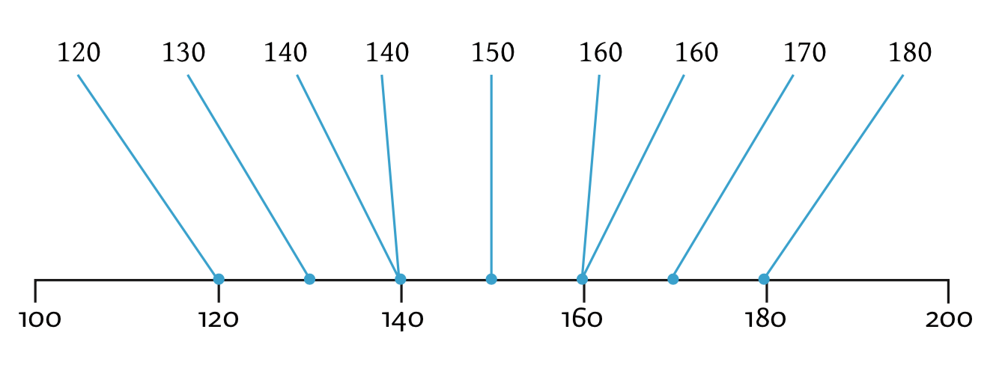
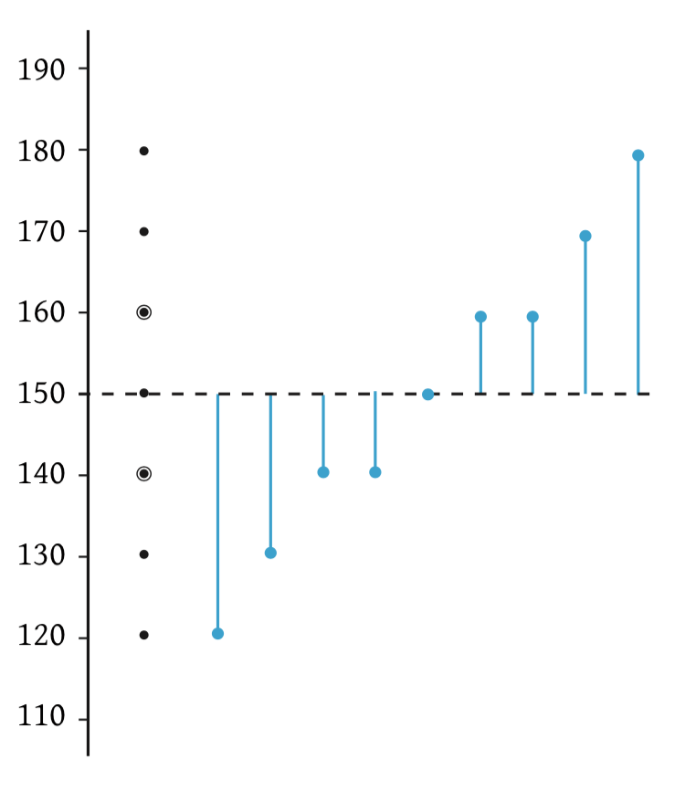

Hoofdstuk 0
0.1 Handleiding der Handleidingen en het absoluut minimale dat je móet weten.
Je zal snel ontdekken dat bij het vak statistiek, het niet het rekenwerk is dat het meest ingewikkeld is, maar vooral het taaltje dat we hier spreken. Mijn ervaring is dat het juist de taal is die vaak niet wordt begrepen en tot problemen leidt. Als je zegt (of afspreekt) dat ‘\(2\) maal \(4\)’ \(8\) is, dan is dat eigenlijk makkelijker te begrijpen dan een uitspraak als ‘\(80\) procent van de variatie op lengte wordt verklaard door leeftijd’ of ‘teamwork is goed voor het algemeen welzijn’. Zulke stellingen roepen meer vragen op dan dat we iets werkbaars hebben. En zo is het ook binnen de statistiek: Voor de berekeningen hebben we slechts een ‘aantal’ afspraken nodig, maar voor de taal die we gebruiken, zijn dat er velen malen meer. Natuurlijk maken we veel gebruik van synoniemen en het is dus ook zaak voor je tentamen dat je definities in verschillende vormen of situaties kan herkennnen. Een definitie is vaak kort en bondig en daarom vaak juist onbegrijpelijk. Mocht ik definities gebruiken dan maak ik veel gebruik van haakjes met daartussen extra tekst die de definities verduidelijken. Lees definities een keer met de woorden tussen haakjes en een keer zonder, zodat je weet dat je beide vormen snapt. Belangrijke definities zijn vaak apart uitgelicht in deze handleiding, zodat je er eventueel sneller doorheen kunt gaan. Verder heb ik definities proberen toe te lichten met voorbeelden van (verkeerd) gebruik en toepassingen. Door begrippen in een andere bewoording te herhalen (wat ik ook altijd in mijn lessen doe), hoop ik dat je in het gewone leven eerder een situatie of een stuk tekst zal herkennen of begrijpen en je je tentamen er uiteindelijk - fluitend - in trapt. Alle rekenopgaven heb ik tot in de puntjes - met tussen oplossingen - en vaak op verschillende manieren uitgewerkt en vind je in aparte secties na ieder onderwerp. Je hoeft dus altijd maar even iets verder te kijken voor een verlossend antwoord of uitwerking. Natuurlijk kan je op verschillende manieren iets intypen op je rekenmachine en ik laat dus ook verschillende manieren zien. Vaak hebben mensen hun eigen manier, maar ik denk als je mijn manieren snapt, je ook weer beter de gewone rekenregels beheerst en vooral de theorie beter snapt. Er zit meer theorie in die formules verstopt dan je vaak denkt. Mijn advies is dus: lees gewoon alles, van begin tot eind, dan weet je ook waar de aan en uit knop zit.
0.1.1 De essentie van waar we mee bezig zijn, in het leven én in de wetenschap.
Tijdens mijn studie kwam ik er snel achter dat de huidige wetenschap niet álles verklaren kan. Sterker nog: Wetenschap kwam me vaak ietwat ‘religieus’ over. Heel veel (vreemde) begrippen hebben een bestaansrecht omdat ze bruikbaar of functioneel zijn, maar vaak weet niemand precies wat er met zo’n woord of begrip wordt bedoeld, of waar een begrip nou echt naar verwijst. Denk aan (psychologische) termen zoals ‘Ego’, ‘de wil’ of ‘het bewustzijn’ of aan normale termen als ‘asbak’, ‘koe’ of ‘tafel’ behoorlijk vaag eigenlijk. Wat is nou een typische tafel? Voor velen dient de straat ook als een asbak. We hanteren dan ook vaak afspraken over hoe en wat we bedoelen. Een wetenschapper kan niet alles weten en daarom heeft een wetenschapper noodzakelijkerwijs - zo zijn ‘aannames’, ook wel een verzameling stellingen (ideeën) waarvan men eigenlijk niet weet of ze wel echt waar zijn, maar voorlopig wel even voor lief aanneemt (er voorlopig dus even in gelooft). Heel veel stellingen, zoals ‘tijd gaat vooruit’ mogen dan misschien met onze alledaagse ervaringen overeenkomen, maar dat wil nog niet zeggen dat die stelling ook waar is. Zo dacht men vroeger ook dat de zon om de aarde heen draaide. In de wetenschap is slechts een persoonlijke of subjectieve ervaring, niet voldoende om een stelling te bewijzen. Descartes begon met de aanname: ‘Ik denk, dus ik ben’ (hij moest iets zeggen over het al dan niet bestaan van zijn persoon en had daar een bewijs voor nodig). Wat mij betreft een zinloze en rare aanname. Ik wil graag een nieuwe - zinvolle - aanname of uitgangspunt hiervoor in de plaats. Een uitgangspunt dat meteen ook de essentie van statistiek (of wetenschap en het leven) raakt en die dus super handig is als je even - door de cijfers - de juíste getallen niet meer ziet. Om antwoord hierop te vinden, moeten we ons eerst de vraag stellen wat onderzoekers en pasgeboren baby’s met elkaar gemeen hebben. Beiden tasten hun omgeving af zodat ze in staat zijn om die omgeving of werkelijkheid uiteindelijk te beheersen, of te manipuleren. So far, so good. Mijn volgende en belangrijkste vraag is: Wat hebben de omgeving (werkelijkheid) van de baby en de omgeving van de onderzoeker gemeen? Dus ook al zitten de twee in een totaal andere omgeving, wat is er toch gelijk of welke ervaring zullen beiden in ieder geval delen. Dit is een diepe, maar heeft volgens mij maar één antwoord. Zowel baby als wetenschapper zullen ‘verschillen’ in (of binnen) hun omgeving ervaren. Een baby zal voelen dat het niet overal even warm is, of zal zien dat het niet altijd even licht is en zal niet altijd even hongerig zijn. Zijn vader en moeder zullen niet hetzelfde stemgeluid hebben en de baard van pappa voelt toch echt wel spannender aan dan die zachte wangetjes van mama. De onderzoeker ervaart ook verschil. Hij zal observeren dat niet iedereen in zijn steekproef hetzelfde is. Niet iedereen zal even oud, blij, lang, slim, creatief, gemotiveerd of wat dan ook zijn. Een van de kerntaken van wetenschap (en statistiek) is juist het beschrijven, voorspellen en verklaren van die verschillen in onze omgeving. Zo heeft een baby na korte tijd ook wel door dat een hogere stem samengaat met een zacht wangetje en een bromgeluid met een baard. We ervaren allemaal verschil en we gebruiken die verschillen om te voorspellen. Ik denk zelfs dat je kunt stellen dat verschil doet leven en dus daarom:
Ik ervaar verschil, dus ik ben
Je komt een hoop moeilijk-doenerij tegen in de wetenschap (terwijl wetenschappers het begrip parsimony - ook wel spaarzaamheid of simpelheid - hoog zouden hebben moeten zitten). Zo zegt men gek genoeg weleens in de statistiek;
Geslacht heeft een effect op lengte.
Er is samenhang tussen geslacht en lengte.
Geslacht en lengte zijn gecorreleerd.
Lengte is geassoccieerd aan geslacht.
Vier heel correcte uitspraken, maar (en) ze betekenen allemaal precies hetzelfde. Wat met deze uitspraken wordt bedoeld is - enkel en alleen - dat mannen over het algemeen een andere lengte hebben dan vrouwen, dus dat mannen gemiddeld gezien verschillen in lengte van de vrouwen. Er is dus een (systematisch) verschil in lengte tussen mannen en vrouwen. Wij weten zelfs (uit ervaring of onderzoek) dat mannen meestal langer zijn dan vrouwen (dit blijkt niet uit bovenstaande uitspraken, die zeggen alleen maar dat er verschil is, maar niet welke kant dat verschil op gaat). Anyway, je zal dus een hoop moeilijke begrippen tegenkomen, maar mocht je even in de war raken, besef dan dat bij statistiek altijd alles om verschil gaat. Verschillen op het een, geeft vaak een verschil op het ander.
0.1.2 Aapjes
Om verschillende technieken of analyses uit te leggen, gebruik ik in de les altijd ‘mijn aapjes’. Mijn aapjes houden de boel tastbaar en daar wordt mens, kind en dier blij van. Dus ook voor jullie voer ik mijn aapjes door, zodat jullie er ook van kunnen genieten. Na een paar oefeningen zal je zien dat je de aapjes wel kunt dromen en tijdens tentamens komen ze goed van pas. Als je het even niet meer weet, kun je je hoogst waarschijnlijk wel weer aan hun op trekken. Je hebt dan één ‘kant en klaar voorbeeld’ in je hoofd zitten (met antwoorden) die meteen op de meeste zaken toepasbaar is. Je zult alleen nog even de getallen moeten veranderen. Het zijn mijn \(9\) aapjes die ik ooit in een bruin verleden heb gevangen (ik doe zo min mogelijk aan ethiek in deze handleiding) omdat ik me verbaasde over de verschillen die ik bij hun zag. Het was een heerlijke verwondering, want deze lieve aapjes varieerde in lengte, leeftijd en aapsoort. Hoe mooi kan variatie zijn! Maar goed, later dus veel meer over de apen.
0.2 Onderzoek en aantal algemene definities voordat we aan de slag gaan met het echte rekenwerk, het absoluut minimale dus.
Wetenschappers houden zich vooral bezig met het doen van onderzoek, maar wat is onderzoek in het algemeen, welk doel heeft onderzoek en wat doen onderzoekers nou eigenlijk feitelijk?
Onderzoek
Het ontdekken, beschrijven en verklaren van (observeerbare of meetbare) verschijnselen, patronen of relaties (zoals gedrag en mentale processen) in de werkelijkheid.
Met de werkelijkheid bedoel ík alles wat maar ‘waar te nemen’ of te observeren valt in onze omgeving. Dus onder de werkelijkheid versta ik bijvoorbeeld (het gedrag van) mensen, apen, hersenen, nieren, een stad, een land, een auto, de aarde of iets anders in ons Heelal. De werkelijkheid is dus een heel ruim begrip hier. En ik neem voor het gemak even aan dat deze werkelijkheid ook echt bestaat! We mogen dan misschien niet allemaal dezelfde interpretatie van de werkelijkheid hebben, maar ik neem dus wel even aan dat we allemaal naar dezelfde werkelijkheid kijken.
Onderzoeksobject
Het onderzoeksobject is die of datgene van wie of wat je informatie verzamelt voor een onderzoek.
Het onderzoeksobject is dus de persoon, het ding, zaak, case (casus) of dus object dat wordt onderzocht binnen een onderzoek en aan wie of wat dus de observeerbare verschijnselen of informatie over eigenschappen, toebehoren. Binnen een onderzoek kan het één object zijn, maar meestal zijn het er meerderen.
Voorbeelden: meestal mensen (of dus slechts één mens), proefpersonen of proefdieren, maar soms ook een bepaalde dag of dagen in het jaar, landen of andere objecten zoals een school, ziekenhuis, gevangenis of één of meer steden.
Gebruik: Een onderzoek kan zich richten op Nederlandse adolescenten (onderzoeksobjecten) en hun vrijetijdsbestedingen (observeerbare verschijnselen).
Variabele
‘Iets dat varieert’, ‘iets, eigenschap of verschijnsel dat een bepaalde grootte of waarde kan aannemen en dus verschillend qua waarde of grootte kan zijn’, een (bepaald soort) grootheid, een (bepaald soort) dimensie.
Voorbeelden: geslacht, lengte, leeftijd, soort depressie, maar ook mate van depressie, opleidingsniveau, economische status, nationaliteit, kans op slagen of kans op ziek worden, temperatuur, bloeddruk, aapsoort.
Gebruik: Eén persoon kan op één moment niet verschillende lengtes hebben, het is de variabele ‘lengte’ die bij verschillende personen verschillende waarde zal aannemen. Een persoon kan natuurlijk wel over meerdere momenten variëren en dus andere waarden aannemen (denk aan een toenemende lengte bij een kind). We noemen variatie binnen één persoon within subject variation. Als het gaat om verschil in waarden tussen personen, en dus wel op één moment dan wordt het between subject variation genoemd.
Waarde of categorie (zelfde!)
Een getal of naam (label) dat kan worden toegekend aan een eigenschap van een zaak, ding of (onderzoeks-) object.
Voorbeelden: een lengte van ‘\(172\) cm’, een IQ van ‘\(130\) punten’ of een ‘bipolaire depressiestoornis’.
Let op bij gebruik: waarden én categorieën zijn dus niet hetzelfde als variabelen. Een variabele of dimensie kan dus wel een bepaalde waarde of categorie aannemen. Het is de variabele die (op een bepaald moment) een (bepaalde) waarde aanneemt.
Gebruik:
De variabele ‘geslacht’ kan de twee waarden (of categorieën) ‘man’ of ‘vrouw’ aannemen (alsjeblieft geen ethiek hier, maar natuurlijk erkennen we tegenwoordig meerdere soorten geslachtsvormen)
De variabele ‘lengte’ neemt bij pasgeboren babies (objecten) meestal een waarde aan ergens tussen \(30\) en \(60\) cm.
De meeste mensen die een universitaire opleiding (waarde op de variabele ‘opleidingsniveau’) hebben afgerond, scoren vaak hoger (waarde) op cognitieve dimensies (een dimensie is hetzelfde als een variabele) dan mensen met een lager (waarde) opleidingsniveau (variabele).
Vandaag (object) is de temperatuur (variabele) \(30\) graden Celsius (waarde).
Een onderzoek richt zich op de relatie tussen ‘studiekeuze’ (variabele) en het ‘soort bijbaantje’ (variabele) bij Nederlandse adolescenten (onderzoeksobjecten).
Mijn onderzoek richt zich op ‘het verband tussen leeftijd en lengte bij apen’. De ‘onderzoeksvraag’ is hier eigenlijk of de verschillen in leeftijd systematisch samen gaan met verschillen in lengte bij apen. Of makkelijker gezegd: ‘Of ze dus groeien naarmate ze ouder worden’. De wijsneus, ik dus, zou meteen vragen, maar waarom ‘zonodig’ omhoog groeien en niet omlaag? Later gaan we hier moeilijk over doen, wees gerust.
Observatie
Meting (bepaling aan de hand van een meetinstrument) van een bepaalde waarde op een variabele, toebehorend aan een onderzoeksobject.
Voorbeeld:
We kunnen observeren (meten of bepalen) of een bepaald persoon (onderzoeksobject) een man (één van de twee waarden die de variabele geslacht kan aannemen) dan wel een vrouw (de andere waarde of categorie) is.
Aan de hand van een IQ-test (meetinstrument) observeren of meten we hoe hoog een bepaald persoon scoort.
0.3 Rekenen aan Apen.
Even warm worden. Voordat we inhoudelijk naar theorie en analyses gaan kijken, wil ik dus eerst even mijn apen introduceren. Op basis van de gegevens (data) gaan we vast wat rekenen, zodat we een aantal rekenregels tegenkomen die later van pas zullen komen. Ook tijdens deze berekeningen behandel ik al belangrijke theorie, maar ik zal nog niet alle begrippen die ik hier gebruik uitleggen, soms doe ik dat pas verderop in deze handleiding. Maar ook hier genoeg theorie voor je eerste tentamen statistiek. Het is voor nu ook nog even niet nodig dat je alle begrippen meteen snapt, alles op z’n tijd en ik wil nu graag puur even rekenen en wat extra aandacht aan de rekenregels geven. In de dataset in onderstaande tabel, vind je de scores (datapunten) die ik verzameld heb tijdens mijn onderzoek naar aapjes. Mijn \(9\) aapjes vormen een steekproef en heb ik eerlijk geselecteerd (uitgekozen) uit de hele populatie (ergens in land waar je heel lekker kunt eten, Indonesië ofzo). Je ziet \(3\) variabelen (de drie kolommen) in deze tabel. De eerste variabele \(i\) - spreken we even af - noemen we ‘respondent- of case-nummer’ en is alleen maar om mijn andere - of echte - waarnemingen of observaties te organiseren (ik heb dus alle aapjes genummerd van \(1\) tot en met \(9\)). In de tweede kolom vind je \(9\) scores voor hun ‘lengte in cm’. Uit luiheid gebruiken we eigenlijk altijd een letter voor een variabele. Hier staat \(Y_i\) voor de score qua lengte in cm voor het ‘\(i\)-de’ of ‘zoveelste’ aapje. Je mag dus zeggen dat de score qua lengte voor bijvoorbeeld het tweede aapje ook wel te schrijven is als \(Y_2 = 130\). In de derde kolom vind je de variabele \(X_i\) die in dit geval voor de ‘leeftijd in jaren’ staat (voor aapje nummer \(i\) weliswaar). Dus \(X_9 = 2.0\) betekent alleen maar dat aapje nummer \(9\) een leeftijd heeft van \(2.0\) jaar.
| \(i\) | \(Y_i\) | \(X_i\) |
|---|---|---|
| 1 | 120 | 1.0 |
| 2 | 130 | 1.0 |
| 3 | 140 | 1.0 |
| 4 | 140 | 1.5 |
| 5 | 150 | 1.5 |
| 6 | 160 | 1.5 |
| 7 | 160 | 2.0 |
| 8 | 170 | 2.0 |
| 9 | 180 | 2.0 |
0.3.1 Waarnemingen samenvatten aan de hand van statistieken.
We gaan onze eerste statistieken uitrekenen: het gemiddelde (\(\bar{Y}\)), standaarddeviatie \(S_y\) en variantie (\(S^2_y\)) voor de variabele \(Y\) (lengte in cm). Verder heb ik ook de scores voor lengte even grafisch (in een plaatje) weergeven aan de hand van een getallenlijn. Je ziet maar zeven punten op de getallenlijn in plaats van negen, maar dat komt dus omdat we twee keer een dubbele waarneming hebben, bij \(140\) en \(160\) cm.

Figuur 0.1: getallenlijn van de lengtes van de appjes
Het gemiddelde is ook wel de verwachte waarde (voor een variabele). Het gemiddelde is een statistiek (een beschrijvend of samenvattend getalletje) die de positie van het centrum van een verzameling datapunten aangeeft waardoor we ook wel de ligging (plek of positie) van onze scores weten. Als je aan een getallenlijn denkt (zie figuur 0.1) dan is het gemiddelde ook wel een soort plaatsbepaling (van het centrum van de datapunten). Naast die plaatsbepaling (beschrijving van positie of lokatie) heeft het gemiddelde nog een andere belangrijke rol. Je zou kunnen zeggen dat het gemiddelde ook wel de beste gok is als je een voorspelling wilt doen. Dus als één van onze negen aapjes binnen zou komen wandelen, wat zou dan je verwachting of voorspelling zijn qua lengte? Vandaar dus ook de naam ‘verwachte waarde’ voor het gemiddelde. Omdat het gemiddelde je beste gok is (bij gebrek aan andere informatie), kun je zeggen dat het gemiddelde je meest basale voorspelling, theorie of (voorspel-) model is. Termen als ‘intercept model’ of het ‘nul-model’ zijn ook veel gebruikte termen voor het gemiddelde. Als je een model maakt, probeer je alleen maar de realiteit of de werkelijkheid te benaderen of weer te geven. Een model stelt meestal een representatie (soort kopietje) van iets anders (werkelijkheid) voor. Sommige modellen zijn complex (ingewikkeld) zoals een regressiemodel met tien voorspellers om het algemeen welzijn van een persoon te voorspellen, een maatpak (helemaal op maat gemaakt en ‘representeert’ de vorm van een lichaam), een landkaart met alle wandelwegen van Nederland of zelfs een fotomodel (die modelleert om schoonheid te representeren) en sommige modellen (of theorieën) zijn heel simpel zoals het gemiddelde zelf, een spijkerbroek, het liefst een Levi’s \(28/32\) (‘\(28\)’ staat hier voor de breedte en \(32\) voor de lengte en met slechts twee ‘parameters’ (beschrijvers) weet de winkelier dus al genoeg en pakt dan zo de juiste spijkerbroek (model) uit de kast, een speelgoedautootje, of een plattegrond van je schoolgebouw. Een ‘model’ is dus een ruim begrip, maar de modellen die we in de statistiek bouwen zijn eigenlijk altijd bedoeld om verschijnselen (in de werkelijkheid) te beschrijven of te voorspellen.
0.3.2 De berekening van het gemiddelde voor een variabele.
In woorden zou de berekening voor het gemiddelde van de variabele \(Y\) zijn: eerst alle \(Y\)-scores voor een variabele optellen en dan pas delen door het aantal. Je deelt dus de som van alle scores door het aantal scores. Je kan het ook moeilijk(er) zeggen: om het gemiddelde (mean, average, expected value) te vinden, deel je de sommatie van alle scores (ook wel: \(\sum\limits^{i=n}_{i=1}{Y_i}\)) door het aantal waarnemingen (\(n\)) in je steekproef. In formulevorm wordt het gemiddelde voor \(Y\) (\(\bar{Y}\)) als volgt uitgeschreven:
\[\overline{Y}\ =\frac{\sum\limits^{i=n}_{i=1}{Y_i}}{n}\ \]
We komen dus nu voor het eerst het ‘sommatieteken’ tegen (\(\sum{}\)). Officieel heet dit teken ook wel ‘sigma’, maar die term ga ik niet gebruiken (omdat de standaardafwijking voor een populatie ook die naam draagt) en gebruik ik dus gewoon de het woord ‘sommatieteken’. In deze formule zie je een onderschift (sub-script) ‘\(i=1\)’ en een bovenschrift (super-script) ‘\(i=n\)’ bij het sommatieteken. Heel vaak laten ze onder- en bovenschrift weg, dat doe ík nog even niet, ik wil graag dat je beseft waar ze voor staan. \(i\) staat bij ons nu voor respondentnummer en de letter \(n\) staat voor de totale steekproefgrootte, dus \(9\) bij ons, of ook wel de hoogst mogelijke waarde voor \(i\). Later krijgen de \(i\)-tjes een andere betekenis (bijvoorbeeld groepsnummer i.p.v. respondentnummer) en hebben we ook \(j\)-tjes en \(k\)-tjes nodig om de boel te organiseren en laat ik ze nu dus staan, zodat je eraan kunt wennen. De formule staat nu in een breukvorm. In het het bovenste gedeelte van de breuk (de teller of numerator in het engels) staat dus \(\sum\limits^{i=n}_{i=1}{Y_i}\). Het onderschrift ‘\(i=1\)’ hierin vertelt ons dus dat we eerst datgene dat achter het sommatieteken staat (hier alleen \(Y_i\) ), voor elke waarde van \(i\) (beginnend bij ‘\(i=1\)’ en eindigend bij ‘\(i=n\)’ , dus ‘\(i=9\)’ bij ons) moeten invullen (vervangen) en daarna pas deze negen waarden moeten optellen:
Als we eerst alleen de \(i\)-tjes vervangen met de respondentnummers krijgen we:
\(\:\:\:\:\:\:\sum\limits^{i=9}_{i=1}{Y_i} = Y_1 + Y_2 + Y_3 + Y_4 + Y_5 + Y_6 + Y_7 + Y_8 + Y_9\)
En als we vervolgens \(Y_1\) tot en met \(Y_9\) vervangen met de daadwerkelijke waarden, kunnen we (pas) echt gaan rekenen en krijgen we de uiteindelijke waarde voor de som van alle \(9\) scores:
\(\:\:\:\:\:\:\sum\limits^{i=9}_{i=1}{Y_i} = 120 +130 +140 + 140 +150 + 160 + 160 + 170 + 180 = 1350\)
De som of sommatie van alle scores is dus (heeft een waarde van) \(1350\). Overigens hebben we het hier nog steeds over centimeters, dus als de \(9\) aapjes boven op elkaar zouden staan, hebben we een apentoren van \(1350\) cm lang. Stel dat ik alleen de middelste drie lengtes van mijn aapjes zou willen optellen dan zouden dus alleen het onder en bovenschrift bij het sommatieteken veranderen:
\(\:\:\:\:\:\:\sum\limits^{i=6}_{i=4}{Y_i} = Y_4 + Y_5 + Y_6\)
Wordt dus:
\(\:\:\:\:\:\:\sum\limits^{i=6}_{i=4}{Y_i} = 140 + 150 + 160 = 450\)
Maar we waren er nog niet want in het onderste gedeelte van de breuk (noemer, denominator in het Engels) stond ook nog een \(n\). Die staat vaak voor de totale steekproefgrootte, hier dus ook. Maar soms kom je een kleine letter \(n\) én een grote letter \(N\) tegen binnen één formule. In dat geval bedoelen ze met de kleine \(n\) de groepsgroottes van de subgroepen binnen je steekproef (aantal mannen en vrouwen bijvoorbeeld) en de grote \(N\) voor totale steekproefgrootte (aantal mensen). Anyway, we moeten de sommatie van de scores (\(1350\)) dus nog delen door \(9\) en we hebben de gemiddelde waarde van \(Y\) gevonden. Natuurlijk reken je vaak met tussen-antwoorden en type je dus niet altijd de hele berekening in één keer in. Om het formule gevoel toch een beetje op te krikken, schrijf ik het toch even op zoals je het allemaal in één keer zou kunnen intypen op je rekenmachine:
\(\:\:\:\:\:\:\overline{Y}\ =\frac{\sum\limits^{i=n}_{i=1}{Y_i}}{n} = [120+130+140+140+150+160+160+170+180] / 9 = 150\)
Ik gebruik altijd (vaak) blokhaken om aan te geven dat ik een sommatieteken uitwerk. Met je rekenmachine type je (natuurlijk) gewone haakjes in plaats van blokhaken. De intype-manier wordt dus als volgt:
\(\:\:\:\:\:\:\ \overline{Y}\ =\frac{\sum\limits^{i=n}_{i=1}{Y_i}}{n} = (120+130+140+140+150+160+160+170+180) / 9 = 150\)
Het gemiddelde voor lengte, dus \(\overline{Y}\), voor deze steekproef is dus (of bedraagt) \(150\) cm en is dus ook de verwachting, voorspelling, of verwachte waarde (expected value \(E(Y)\)) als je wilt voorspellen wat de waarde van een aapje zal zijn, als er een willekeurig aapje binnen komt lopen. Soms kom je de formule voor het gemiddelde in een andere vorm tegen. En omdat we later met veel moeilijkere formules moeten werken, wil ik dat je beide vormen even goed snapt en kunt toepassen. De moeilijke versie ziet er als volgt uit:
\[\overline{Y} = \frac{1}{n} \cdot \sum\limits^{i=n}_{i=1}{Y_i}\]
Mischien ken je de regel ‘delen door een getal is hetzelfde als vermenigvuldigen met het omgekeerde’. Neem bijvoorbeeld \(8/2 = \frac{8}{2} = 4\). We delen dus hier het getal \(8\) door het getal \(2\). Wat de regel eigenlijk zegt, is dat je het getal \(8\) ook kunt vermenigvuldigen met het omgekeerde van het getal \(2\). Het ‘omgekeerde’ van het getal \(2\) is \(\frac{1}{2}\) en het omgekeerde van bijvoorbeeld \(100\) is ook wel ‘\(1\) gedeeld door \(100\)’, dus \(\frac{1}{100}\) (één honderdste). Dus je had ook \(8 \cdot \frac{1}{2}=4\) kunnen doen of draai het om: \(\frac{1}{2} \cdot 8 = 1/2 \cdot 8 =4\). Je ziet dus dat ik het ‘keer-teken’ met een puntje doe, maar als ik het uitschrijf voor de rekenmachine zal ik (vaak) een ’*’ gebruiken voor het maalteken. De ouderwetse keer, ofwel ‘x’, kunnen we nu niet meer gebruiken omdat de meeste variabelen uit luiheid, de naam (symbool of letter) ‘X’ krijgen en we willen zo min mogelijk verwarring met ‘X’-en en keer-tekens.
| Getal of Waarde | Omgekeerde in breukvorm | Omgekeerde in 2 decimalen |
|---|---|---|
| 1 | \(\frac{1}{1} = 1\) | 1.00 |
| 3 | \(\frac{1}{3}\) | 0.33 |
| 100 | \(\frac{1}{100}\) | 0.01 |
| \(\frac{1}{3}\) | \(\frac{1}{\frac{1}{3}}=3\) | 3.00 |
| \(\frac{2}{5}\) | \(\frac{1}{\frac{2}{5}} = \frac{5}{2}\) | 2.50 |
| \(n\) | \(\frac{1}{n}\) | Dit kun je pas uitrekenen als je de waarde van \(n\) weet |
| \(n-1\) | \(\frac{1}{n-1}\) | Dit kun je pas uitrekenen als je de waarde van \(n\) weet |
| \(Benjamin\) | \(\frac{1}{Benjamin}\) | Dit kun je pas uitrekenen als je de waarde van \(Benjamin\) weet |
Dus het liefst had je de formule als volgt ingevuld:
\[\overline{Y} = E(Y) = \frac{1}{n} \cdot \sum\limits^{i=n}_{i=1}{Y_i} = \frac{1}{9} \cdot [120+130+140+140+150+160+160+170+180] = 150\]
Of qua intypen op je rekenmachine:
\[\overline{Y} = E(Y) = \frac{1}{n} \cdot \sum\limits^{i=n}_{i=1}{Y_i} = 1/9 \cdot (120+130+140+140+150+160+160+170+180) = 150\]
Merk op dat ik \(1/9\) niet tussen haakjes heb gezet, ik weet dat de meesten van jullie gek zijn op haakjes, maar ik doe het alleen als het nodig is. Denk dus óók na als ik géén haakjes gebruik en type alsjeblieft de formules letterlijk in zoals ik ze uitschrijf (en zie dan dat het blijkbaar zo mag, tenzij je een rekenmachine uit de tijd van Kniertje hebt, maar dan zal je een nieuwe moeten halen; een zogenaamd ‘wetenschappelijk’ rekenmachientje of een Grafische Rekenmachine, Texas TI (nog wat). Grafische rekenmachientjes zijn niet op alle opleidingen toegestaan, dus check vooral met je opleiding en een wetenschappelijk reken-apparaat is wel minimaal als je veel (lange berekeningen) moet intypen. Het leren lezen van woorden is één ding, maar het lezen (en invullen) van formules is van een heel andere orde. Soms zul je dus gewoon - symbool voor symbool - een formule moeten uit-spellen tijdens het overnemen van een formule in je ruitjes-schrift.
0.3.3 De berekening van de Variantie en de Standaardafwijking
Standaardafwijking, standaarddeviatie, standard deviation
De volgende - en misschien wel de meest belangrijke - statistiek die we nu gaan berekenen, is de standaardafwijking. Ook deze statistiek beschrijft een karakteristiek (eigenschap) van een verzameling scores voor een variabele, bij ons de variabele lengte (\(Y_i\)) dus. De standaardafwijking is een spreidingsmaat en vertelt je in hoeverre de scores (van een variabele) juist bij elkaar of juist uit elkaar liggen. Als je naar de getallenlijn kijkt, gaat het dus nu om de concentratie (dichtheid) van datapuntjes. Als de punten dicht bij elkaar liggen, is er weinig spreiding en heeft de standaardafwijking een relatief lagere waarde dan als de punten juist verder uit elkaar liggen.
Standaardafwijking
De standaardafwijking is de gemiddelde afwijking (afstand of verschil) van een observatie (of score) naar het gemiddelde.
In gewone woorden zou je ook wel kunnen zeggen dat de standaardafwijking de grootte van de gemiddelde gokfout (afstand, verschil, afwijking, blauw streepje) is als je de scores van jouw variabele probeert terug te voorspellen (gokken) met het gemiddelde als verwachte waarde (als beste gok of voorspelling dus). Als ik standaardafwijking zeg, denk ik vaak gewoon: de grootte van de gemiddelde gokfout (als je het spelletje zou spelen, dus zou gokken of voorspellen wat de lengte van een aapje is voordat hij binnenkomt en het gemiddelde als beste gok gebruikt, ik noem dit ‘het spelletje’). Hier gaan we even dieper (en makkelijker) over nadenken door het spelletje te spelen. Stel je voor dat onze negen aapjes op de gang staan en dat er willekeurig (je weet niet welke) één aapje binnen komt wandelen. Je hebt de data inmiddels gezien, je weet dus ook welke ‘waarden’ binnen zouden kunnen komen wandelen. Inmiddels weet je ook dat het gemiddelde je beste gok is, je weet misschien nog niet waarom, maar dat wordt nu hopelijk duidelijk. Stel, jij zegt dus: ‘Het aapje dat binnenkomt, zal wel \(150\) cm zijn’. Er is maar één aapje precies \(150\) cm lang, dus een grote kans dat je precies goed gokt (en er dus \(0\) cm naast zit met jouw gok of verwachting), heb je niet (die kans is slechts \(1\) op \(9\) of \(1/9\) of \(0.11111....\)). Maar daar gaat het nu ook niet om (gek genoeg). Het gaat dus niet om ‘zo vaak mogelijk precies goed gokken’, maar juist om ‘gemiddeld gezien er zo dicht bij in de buurt komen’. En daarop moet je beste keuze - qua voorspelling gebaseerd zijn. Je wilt - gemiddeld genomen - de kleinst mogelijke gokfout weten, als je het spelletje herhaald. En als je dus het gemiddelde kiest als beste gok, dan is je gemiddelde gokfout - dus de standaardafwijking - het kleinst. Goed, we gaan hem - de standaardafwijking - berekenen, in dit geval dus voor de variabele \(Y_i\) (lengte in cm). We bouwen het langzaam op, want tijdens onze berekening komen we ook weer een aantal rekenregels en theorie tegen die je later weer zal moeten gebruiken, dus blijf opletten.
Individuele afwijking
Een individuele afwijking van een observatie naar het gemiddelde is de afstand van de waarde van een waarneming naar het gemiddelde (denk dus een individuele gokfout).
Wij spreken af dat als een score boven (of rechts van, als je aan de getallen lijn denkt) de verwachting (het gemiddelde) ligt, die score een positieve afwijking heeft ten op zichte van het gemiddelde (een positief residu). Als de score onder (of links) van de verwachting ligt, noemen we het dus een negatieve afwijking (of dus een negatief residu). Om de afstand dus juist te berekenen, neem je altijd de waarde van de observatie (het meest specifieke) en daar trek je de verwachting (het meest algemene) van af. Onthoud vast: een verschil (afstand tussen) is altijd ‘specifiek min algemeen’ en een observatie is natuurlijk veel specifieker dan de verwachting (het gemiddelde). Maar dus altijd, in deze volgorde.
Residual = Observed - Expected
Een residu is ook wel iets dat je overhoudt (in dit geval verschil, afstand of hoeveelheid) na een bepaalde behandeling (een aftrekking), je hebt meerdere soorten residuen, maar dat is nu nog even niet aan de orde. Voor nu zou je een (individuele) gokfout dus ook wel een residu kunnen noemen. Laten we vast alle residuen (ten op zichte van het gemiddelde uit rekenen).
Residual = Observed - Expected = \(Y_i - \overline{Y}\)
De afwijking van aapje nummer \(1\) is \(Y_1 - \overline{Y} = 120 - 150 = \text{-}30\) en is dus een negatieve afwijking. Voor respondentnummer \(1\) kan je dus zeggen dat de gokfout een waarde heeft van \(-30\) en bijvoorbeeld voor aapje nummer \(8\) dus \(20\). Omdat we straks gaan optellen en we telkens gelijksoortige handelingen gaan doen, zet ik de resultaten vast in kolomen in de tabel hieronder. Als je naar de de individuele afwijkingen kijkt dan zie je dat de kleinste afstand \(0\) is (voor aapje nummer \(5\), want die ligt precies op het gemiddelde) en de grootste afstand \(30\) of \(\text{-}30\) is. De standaardafwijking is de gemiddelde afwijking (van een observatie naar het gemiddelde). Dus je zou misschien zeggen dat als je alle individuele afwijkingen bij elkaar optelt en vervolgens deelt door het aantal, dan heb je de standaardafwijking gevonden (berekend) hebt. Maar helaas, zo werkt het dus niet (maar ik zou het wel zo voelen als ik jou was) We komen twee of drie problemen tegen waarvoor we nog moeten corrigeren (een oplossing voor moeten vinden).
| \(i\) | \(Y_i\) | \(Y_i - \overline{Y}\) | \((Y_i - \overline{Y})^2\) |
|---|---|---|---|
| 1 | 120 | -30 | 900 |
| 2 | 130 | -20 | 400 |
| 3 | 140 | -10 | 100 |
| 4 | 140 | -10 | 100 |
| 5 | 150 | 0 | 0 |
| 6 | 160 | 10 | 100 |
| 7 | 160 | 10 | 100 |
| 8 | 170 | 20 | 400 |
| 9 | 180 | 30 | 900 |
| \(\sum\limits^{i=9}_{i=1}{Y_i} = 1350\) | \(\sum\limits^{i=9}_{i=1}{(Y_i-\overline{Y})} = 0\) | \(\sum\limits^{i=9}_{i=1}{(Y_i-\overline{Y})^2} = 3000\) |
Het foute gevoel moet dus zijn: Eerst de gokfouten (individuele afwijkingen) optellen en daarna de optelling (of som) delen door het aantal, want dan weet je de gemiddelde lengte van die gokfouten, dus de standaardafwijking (zie het dus als negen blauwe streepjes waar je de gemiddelde lengte van berekent, bij mij in de les zijn deze streepjes altijd blauw).

Figuur 0.2: Individuele afwijkingen of: blauwe streepjes
Probleem \(1\): Alle gokfouten optellen geeft nul, daarom gaan we eerst de gokfouten kwadrateren en daarna pas optellen. We kwadrateren hier om alle negatieve waarden positief te maken, zodat we ze wel kunnen optellen en dat de som dus niet tot nul optelt. In formule-vorm zou de optelling (of sommatie) van de individuele afwijkingen er als volgt uitzien:
\[ \sum\limits^{i=n}_{i=1}{(Y_i-\overline{Y})} \]
Wat dus wil zeggen dat je eerst het hele gedeelte na het sommatieteken voor ieder aapje moet invullen en uitrekenen en daarna pas die uitkomsten per aapje moet optellen (dus ook wel gewoon de optelling van de getallen in de derde kolom, zie tabel). Uitgeschreven gaat ie als volgt:
\(\:\:\:\:\:\:\sum\limits^{i=9}_{i=1}{(Y_i-\overline{Y})} = (Y_1-\overline{Y}) + (Y_2-\overline{Y}) + (Y_3-\overline{Y}) + (Y_4-\overline{Y}) + (Y_5-\overline{Y})\:+\)
\(\:\:\:\:\:\:\:\:\:\:\:\:\:\:\:\:\:\:\:\:\:\:\:\:\:\:\:\:\:\:\:\:\:\:\:\:(Y_6-\overline{Y}) + (Y_7-\overline{Y}) + (Y_8-\overline{Y}) + (Y_9-\overline{Y})\)
En dan vervangen door de juiste getallen en de boel uitrekenen:
\(\:\:\:\:\:\:\sum\limits^{i=9}_{i=1}{(Y_i-\overline{Y})} = [(120-150)+(130-150)+(140-150)+(140-150)+(150-150)\:+\)
\(\:\:\:\:\:\:\:\:\:\:\:\:\:\:\:\:\:\:\:\:\:\:\:\:\:\:\:\:\:\:\:\:\:\:\:\:(160-150)+(160-150)+(170-150)+(180-150)] = 0\)
Of als je dit intypet:
\(\:\:\:\:\:\:\sum\limits^{i=9}_{i=1}{(Y_i-\overline{Y})} = (120-150)+(130-150)+(140-150)+(140-150)+(150-150)\:+\)
\(\:\:\:\:\:\:\:\:\:\:\:\:\:\:\:\:\:\:\:\:\:\:\:\:\:\:\:\:\:\:\:\:\:\:\:\:(160-150)+(160-150)+(170-150)+(180-150) = 0\)
Of met tussen-antwoorden (de uitkomsten van de individuele afwijkingen):
\(\:\:\:\:\:\:\sum\limits^{i=9}_{i=1}{(Y_i-\overline{Y})} = \text{-}30 + \text{-}20 + \text{-}10 + \text{-}10 + 0 + 10 + 10 + 20 + 30 = 0\)
Ook hier even aandacht voor de minnetjes (en plussen). Eigenlijk kennen we twee soorten min-tekens. De gewone min op je rekenmachine is de min van ‘aftrekken’ (ik noem hem als nodig de ‘aftrek-min’ dus als je twee getallen van elkaar wil aftrekken). Die andere min op je rekenmachien is ook wel de min om aan te duiden dat een getal een negatieve waarde heeft (een minnetje tussen twee haakjes op je rekenmachien). Ik noem hem ‘de min van negatief’. En in de bovenstaande formule is de eerste min na het ‘=’- teken (die dus voor de 30 staat) een min van negatief getal, de tweede (voor 20) ook. Eigenlijk zie je hierboven dus ook een optelling of sommatie van positieve en negatieve getallen. De meeste mensen zouden zeggen dat als je \(8-6=2\) doet, dat dat een aftrekking (aftreksom) is, maar ik zou het liever willen zien als de optelling van een positief getal (8) en een negatief getal (-6), dus \(8+\text{-}6=2\). Als je namelijk \(8\) euro in je portemonnee hebt én (plus) je hebt ook nog een schuld van \(6\) euro, zou je dus \(2\) euro overhouden. Misschien vind je dat ik moeilijk doe, maar later zul je me dankbaar zijn…. Anyway, bijna iedereen weet dat ‘+ -’ gewoon min wordt. Dus uiteindelijk ziet de som van alle individuele afwijkingen er als volgt uit:
\(\:\:\:\:\:\:\sum\limits^{i=9}_{i=1}{(Y_i-\overline{Y})} = \text{-}30 -20 -10 -10 + 0 + 10 + 10 + 20 + 30 = 0\)
En deze som heeft dus de waarde nul, hier voelt het een beetje alsof de gokfouten ‘verdwenen’ zijn, maar bij optelling van gewone residuen (of gokfouten) krijg je dus altijd nul. Je kan ook zeggen dat de gokfouten elkaar opheffen omdat de uitkomst van de som dus nul is. Eigenlijk moeten we dus van alle negatieve waarden af, zodat we de gokfouten wel kunnen optellen. Wij gaan de gokfouten straks kwadrateren om van de minnetjes af te komen, maar eerst nog een uitwijding over absolute waarden. We zeggen ook wel dat de waarden ‘30’ en ‘-30’ absoluut gezien even groot zijn, omdat ze (op de getallenlijn) dezelfde afstand tot nul hebben. Je moet even ver wandelen om vanuit \(30\) of \(-30\) naar \(0\) te lopen, alleen de richting verschilt. We gebruiken absoluut-tekens om een getal om te zetten naar zijn absolute waarde (of aan te kondigen dat de absolute waarde eraan komt na het ‘=’ teken). Absoluut-teken(s) doe je met twee verticale strepen om een waarde heen:
\(\:\:\:\:\:\: |\text{-}30| = 30\)
Je zegt dan: de absolute waarde van \(\text{-}30\) is \(30\). Of:
\(\:\:\:\:\:\:|20| = 20\)
Het getal \(20\) is dus al gelijk aan zijn eigen absolute waarde. Je zegt in dit laatste geval dus dat de absulote waarde van \(20\), dus gewoon \(20\) is (best flauw dus). Bij absolute waarden denk je dus gewoon het min-teken weg! Dus absoluut gezien, is bij ons de kleinst mogelijke gokfout \(0\) cm en de grootste \(30\) cm. Alle andere gokfouten hadden dus een absolute waarde ergens tussen de \(0\) en de \(30\).
Als je zou moeten schatten wat ongeveer de waarde is van de gemiddelde gokfout zou je dus ergens tussen de \(0\) en de \(30\) in moeten gaan zitten, zeg voor het moment dat die waarde bijvoorbeeld ongeveer \(15\) zal zijn. Hou dit gevoel, een gemiddelde gokfout van ongeveer \(15\) cm, even vast. Als een aapje binnen komt wandelen, zeggen wij dat ie wel \(150\) cm zal zijn, maar het kan dus zijn dat: - een aapje (maximaal) \(30\) cm boven de verwachting zit - een aapje (maximaal) \(30\) cm onder de verwachting zit - een aapje precies op de verwachting zit (er \(0\) cm vandaan zit) - een aapje tussen de \(0\) en de \(30\) cm van de verwachting vandaan zit
Gemiddeld gezien zitten ze dus ongeveer \(15\) cm onder of boven de verwachting, misschien iets meer of iets minder, dit gaan we berekenen zo. De som van de gokfouten geeft dus nul en heeft geen zin, we moeten dus van die minnetjes af. Sommige formules voor de standaardafwijking gebruiken absoluut-strepen om van alle minnetjes af te komen, wij gebruiken een andere formule (of manier) en kwadrateren dus eerst de gokfouten voordat we ze optellen. In de statistiek zul je heel vaak waarden moeten kwadrateren (een getal keer zichzelf doen) (ja, tot vervelens toe) en daarna optellen, we hebben daar dus ook een naam voor: ‘De Som van de Kwadraten’ of kortweg de ‘Kwadratensom’ of Sum of Squares. Het is dus níet ‘het kwadraat van de som’, want dan zou je eerst optellen en dan pas kwadrateren. En de optelling (of som) van de ongekwadrateerde residuen (afwijkingen) geeft toch echt de waarde \(0\). Dus het kwadraat van de som (van gewone residuen) zou dan dus \(0^2 = 0\) zijn! Altijd, altijd en altijd. Dus kwadrateer die residuen eerst even voordat je de boel optelt!
een individuele gekwadrateerde afwijking = \((Y_i - \overline{Y})^2\)
Voor aapje nummer \(1\) word het dus:
\(\:\:\:\:\:\:(Y_1-\overline{Y}) = (120–150)^2 =(–30)^2 = –30 · –30 = 900\)
0.3.3.1 Rekenregels en volgorde van toepassing
Ook hier weer even aandacht voor de rekenregels. Voor het gewone rekenwerk heb je een aantal handelingen (operaties) waarvan de volgorde dwingend is:
- haakjes
- machten (wortels en andere machts-wortels)
- vermenigvuldigen (en delen)
- optellen (en aftrekken)
1. Haakjes
Altijd eerst berekeningen uitwerken - voor zover mogelijk - die tussen haakjes staan. Ik geef eerst een voorbeeld zonder haakjes en dan een paar met.
\(\:\:\:\:\:\:2 \cdot 3 + 5 = 6 + 5 = 11\)
Hier staan geen haakjes. De vermenigvuldiging moet dus eerst gebeuren en daarna pas de optelling. Alleen kijkend naar het linker gedeelte ‘\(2 \cdot 3 + 5\)’ zie ik een som staan van twee dingen of termen. De eerste term is ‘\(2 \cdot 3\)’ en de twee term .
\(\:\:\:\:\:\:(5+2) \cdot 3 = (5+2) \cdot 3 = (7) \cdot 3 = 7 \cdot 3 = 21\)
\(\:\:\:\:\:\:5 + (2 \cdot 3) = 5 + 6 = 11\)
Altijd eerst opschonen (herleiden of korter schrijven) wat tussen haakjes staat. Zodra je niet verder kan zoals bij ‘\((7)\)’, dan zijn de haakjes overbodig geworden.
Hier zijn de haakjes dus overbodig omdat je sowieso eerst moet vermenigvuldigen en daarna pas op te tellen.
2. Machten en Wortels
Bij statistiek komen jullie eigenlijk vooral kwadraatjes tegen (tot de tweede macht), maar soms ook hogere of lagere machten. Neem bijvoorbeeld \(2^4\) (waarbij het getal \(4\) dus in het bovenschrift (superscript) staat van het getal \(2\)) kun je op meerdere manieren uitspreken:
- ‘twee tot de macht vier’ of:
- ‘twee tot de vierde macht (verheven)’ en:
- ‘je verheft twee, tot de macht (van) vier’.
Je schrijft het dus als: \(2^4\) en het betekent ook wel: \(2 \cdot 2 \cdot 2 \cdot 2\) of ook wel’ het getal \(2\), \(3\) keer met zichzelf vermenigvuldigd’. Ja, pas op, drie keer, want als je een getal één keer met zichzelf vermenigvuldigt, heb je het al tot de macht \(2\) gedaan of verheven (gekwadrateerd dus). In \(2^4\) is het ‘grondtal’ \(2\) en noem je \(4\) dus (de waarde van) de ‘macht’ of ‘exponent’.
Bij de ‘gewone’ wortel (huhuh…, maar heet ook wel ‘tweedemachts’wortel), werkt het precies omgekeerd als bij ’een getal tot de tweede macht (verheffen)’. Neem bijvoorbeeld \(9^2\) waarbij ik het getal \(9\) dus tot de tweede macht verhef (kwadrateer). Je spreekt het uit als: ‘negen tot de macht twee’ of ‘het kwadraat van negen’. \(9\) is hier het ‘grondtal’ en \(2\) is de macht (waarmee je \(9\) verheft).
Handeling bij \(9^2\) : Hier doe je ‘\(9\)’, één keer zichzelf, dus: \(9 \cdot 9 = 81\). \(81\) noemen we ook wel het kwadraat van \(9\).
En nu bijvoordeeld juist de wortel van ‘\(9\)’, dus \(\sqrt{9}\) . Je spreekt het uit als; ‘de wortel van negen’. Om de wortel van negen te vinden, is de vraag hierbij eigenlijk:
- Wat keer wat is \(9\)?
- Wat of welke waarde zou één keer zichzelf, \(9\) zijn?
- welk getal voor \(X\) (wat), zou keer zichzelf als antwoord ‘\(9\)’ geven?
- Welk getal moet je kwadrateren om \(9\) te krijgen?
Bij de vraag wat is de waarde van \(\sqrt{9}\) hoort ook wel de vergelijking: \(x^2 = 9\), waarbij je dus \(x^2\) gelijk stelt aan het getal \(9\). Welk getal moet ik tot de macht twee verheffen om precies negen te krijgen of: \(x \cdot x = 9\) dus voor welke waarde van \(x\) klopt deze vergelijking?
Het antwoord (de juiste waarde voor \(x\)) is natuurlijk hier ‘\(3\)’, want \(3^2 = 3 \cdot 3 = 9\). Trouwens, de wortel van \(9\) is óók \(-3\) omdat \((\text{-}3)^2 = \text{-}3 \cdot \text{-}3 = 9\). Dit laatste mag je voorlopig vergeten. Sterker nog: Er bestaan ook hogere (of lagere) machtwortels dan de tweedemachts (gewone) wortel. Voorlopig hebben we die niet nodig en daar ga ik - gelukkig voor jullie - nu ook niet op in. Al met al voor ons:
\(\sqrt{9} =3\) Dit is ook het enige antwoord dat je rekenmachientje geeft en niet de negatieve waarde dus.
Een paar wortels, dus kijk even of je rekenmachine doet wat ie moet doen:
| Wortel-behandeling | exact resultaat of antwoord | reden (bewijs) | Resultaat afgerond op drie decimalen |
|---|---|---|---|
| \(\sqrt{1}\) | \(1\) | \(1 \cdot 1 = 1\) | 1.000 |
| \(\sqrt{2}\) | \(\sqrt{2}\) | \(\sqrt{2} \cdot \sqrt{2} = 2\) | 1.414 |
| \(\sqrt{3}\) | \(\sqrt{3}\) | \(\sqrt{3} \cdot \sqrt{3} = 3\) | 1.732 |
| \(\sqrt{4}\) | \(2\) | \(2 \cdot 2 = 4\) | 2.000 |
| \(\sqrt{9}\) | \(3\) | \(3 \cdot 3 = 9\) | 3.000 |
| \(\sqrt{10}\) | \(\sqrt{10}\) | \(\sqrt{10} \cdot \sqrt{10} = 10\) | 3.162 |
| \(\sqrt{49}\) | \(7\) | \(7 \cdot 7 = 49\) | 7.000 |
| \(\sqrt{n}\) | \(\sqrt{n}\) | \(\sqrt{n} \cdot \sqrt{n} = n\) | onbekend zolang \(n\) onbekend is |
3.Vermenigvuldigen en Delen
Ik hou het hier vooral even bij het moeilijke ‘taaltje’ dat je moet snappen en moet kunnen vertalen naar een vermenigvuldiging of deling. Hoevaak zie ik mensen niet denken, na een vraagstuk: ‘Uhm, moet ik nou juist delen of keer doen?’. Beide operaties lijken weer erg op elkaar, ze zijn alleen verschillend omdat ze het omgekeerde van elkaar zijn. Beetje vaag vooralsnog, maar je kan ‘iets’ of een hoeveelheid, groter of kleiner maken, meer of minder. Stel, je hebt heel veel dingen van hetzelfde, bijvoorbeeld heel veel briefjes van \(10\) euro, zeg \(30\) stuks. Natuurlijk ben je geïnteresseerd in het totale bedrag. Maar wat is de snelste manier? Natuurlijk niet briefje voor briefje optellen (\(10 + 10 + .... + 10 = 300\)). Omdat elk briefje dezelfde waarde heeft, maken we ‘de waarde (van één briefje) ook wel dertig keer zo groot (of belangrijk)’. Je pakt je rekenmachientje (je hoeft van mij niet te kunnen hoofdrekenen, zelfs dit niet) en tikt het in. Maar eigenlijk maak je het getal \(10\) met een factor \(30\) groter, het getal of de waarde \(10\) vermenigvuldig je dus met de waarde \(30\) (de factor) en natuurlijk geeft dat \(300\). of je nou \(10\) keer \(30\) doet of dat je het omdraaid: \(30\) keer \(10\), het geeft allebei hetzelfde antwoord. Wat algemener:
\[a·b = b·a\]
Bij ‘\(12\) gedeeld door \(4\) is \(3\)’, als je dus aan het delen bent (hier door het getal \(4\)), maak je een bepaalde waarde of hoeveelheid (hier dus \(12\)) kleiner, ook wel zoveel keer (\(4\) keer dus) kleiner als waar je die hoeveelheid (\(12\)) door deelt (door \(4\) dus). Dus als je weet dat je iets \(4\) keer kleiner moet maken, dan moet je dus door \(4\) delen (of vermenigvuldigen met het omgekeerde: \(\frac{1}{4}\)). Dus \(12\) gedeeld door \(4\) kun je op verschillende manieren opschrijven:
\(\:\:\:\:\:\:12:4 = 12/4 = \frac{12}{4} = 12 \cdot \frac{1}{4} = \frac{1}{4} \cdot 12 = 3\)
of algemener
\(\:\:\:\:\:\:a:b = a/b = \frac{a}{b} = a \cdot \frac{1}{b} = \frac{1}{b} \cdot a\)
4. Optellen en Aftrekken
Als je verschillende waarden (getallen en/of soms letters) bij elkaar wilt voegen en een zo kort mogelijk antwoord wilt, ben je aan het optellen. Je neemt dan de som (sommatie of optelling) van alle losse elemenenten of termen (in die berekening). Denk vooral ook even aan de getallenlijn. Neem de som ‘\(6 + 8\)’ (dus de som van twee termen, ‘\(6\)’ en ‘\(8\)’). Je start op het punt op de getallenlijn waar het getal \(6\) ligt en vervolgens wandel je \(8\) éénheden naar rechts en kom je dus vervolgens bij het punt uit waar het getal \(14\) ligt. Neem nu de som ‘\(6 - 8\)’. Ja ook al noemen mensen dit vaak een min-sommetje of een aftrekking, ik noem dit gewoon een som. Een som is een optelling (ook wel een combinatie van termen). Maar wat tel je dan bij elkaar op bij het sommetje’\(6 - 8\)‘? Je telt hier dus de twee termen’\(6\)’ en ‘\(-8\)’ bij elkaar op. Ik zie het sommetje ‘\(6 - 8\)’ dus liever in de vorm ‘\(6 + - 8\)’, waarbij ik dus de twee termen ‘\(6\)’ en ‘\(-8\)’ bij elkaar voeg. Als je een negatieve waarde (hier ‘\(-8\)’) toegevoegt aan een willekeurig andere waarde (hier ‘\(6\)’) (dus eigenlijk aftrekt), schuif je op naar links vanuit het eerste getal. Nog een hersenkraker: als je een negatieve waarde van een (andere) willekeurige waarde aftrekt, dan schuif je dus naar rechts op (min min wordt plus zegt men ook wel). Toch nog even wat voorbeelden voor als je toch nog in de war raakt:
\(\:\:\:\:\:\:3+5 = 8\)
\(\:\:\:\:\:\:3+ \text{-}5 = 3–5 = \text{-}2\)
\(\:\:\:\:\:\:3– \text{-}5 = 3+5 = 2\)
\(\:\:\:\:\:\:\text{-}3+5 = 2\)
\(\:\:\:\:\:\:\text{-}3+ \text{-}5 = \text{-}3–5 = \text{-}8\)
\(\:\:\:\:\:\:\text{-}3–5 = \text{-}8\)
\(\:\:\:\:\:\:\text{-}3– \text{-}5 = \text{-}3+5 = 2\)
We lopen de berekening voor de gekwadrateerde individuele afwijking voor het eerste aapje \((Y_1 - \overline{Y})^2 = (120-150)^2\) aan de hand van de volgorde van operaties nog een keer door. Lekker moeilijk doen over makkelijke dingen.
- Staan er haakjes in? Ja en daarom moeten we eerst kijken wat er tussen de haakjes staat en dat zover mogelijk oplossen. Tussen de haakjes staan geen haakjes (\(1\)), machten (\(2\)) of vermenigvuldigingen (\(3\)), er staat alleen maar een aftrekking (\(4\)), dus die kan je meteen doen. Tussen de haakjes staat \(120-150\), ook wel een (aftrek) som van twee termen (\(120\) en \(\text{-}150\)). We noemen deze twee termen ‘gelijksoortig’ omdat de twee getallen over dezelfde éénheid gaan (centimeter). In een sommetje zoals ‘\(4+2a\)’ zijn de twee termen (\(4\) [vier wat?] en \(2a\) [twee keer een ‘aatje’]) niet gelijksoortig en kan je het sommetje dus ook niet verder uitwerken (korter opschrijven). Dus opschonen wat tussen de haakjes staat geeft:
\(\:\:\:\:\:\:(120-150)^2 = (\text{-}30)^2\)
Tussen de haakjes staat dus de waarde \(\text{-}30\) en we kunnen nu dus zeggen dat wat er tussen haakjes staat echt één waarde is (geworden).
- Staan er machten in \((\text{-}30)^2\)?
Ja, de tweede macht, het kwadraat (een kwadraat is een macht) komen we tegen en het kwadraat slaat hier op alles wat tussen haakjes staat, ‘\(\text{-}30\)’ dus. Een kwadraat betekent ook wel dat je de waarde (\(\text{-}30\)) die je ‘kwadrateert’, keer zichzelf moet doen.
\(\:\:\:\:\:\:(\text{-}30)^2 = \text{-}30 \cdot \text{-}30\)
Alledrie de minnen hier zijn van ‘negatief’. Het rechter gedeelte van de vergelijking intypen als \(\text{-}30 \cdot \text{-}30\) en je uitkomst is dan \(900\), min keer min is altijd plus. Vaak typen mensen het toch fout in en typen ze letterlijk \(-30^2\) in en dat geeft toch écht een ander antwoord:
\(\:\:\:\:\:\:\text{-}30^2 = \text{-}30 \cdot 30 = \text{-}900\)
Je ziet hier dat het kwadraatje dus - blijkbaar - alleen maar op die \(30\) slaat en dus geen betrekking op het minnetje heeft. Dus als je weet dat je een negatieve waarde moet kwadrateren bijvoorbeeld ‘\(\text{-}6\)’, dan zijn er maar twee correcte manieren: \((\text{-}6)^2 = 36\) of \(6^2 = 36\) en bij de laatste laat je min-teken dus gewoon weg.
4. Blauwe streepjes en blauwe vierkantjes
Wat gebeurt er eigenlijk als je ‘\(6\) cm’ kwadrateert? Als je de oppervlakte van een vierkant wil berekenen, hoef je alleen maar de breedte maal de lengte te doen. En aangezien een vierkant vier gelijke zijdes heeft (de breedte van het vierkant is dus gelijk aan zijn lengte), kun je dus ook de lengte van één zijde kwadrateren! \(6^2 = 6 \cdot 6 = 36\) Maar officieel zou je ook de meeteenheid in je berekening moeten zetten. \((6\) cm \()^2 = (6 \cdot\) cm \()^2 = 6\) cm \(\cdot 6\) cm \(= 6 \cdot 6·\) cm \(\cdot\) cm \(= 36\) cm\({}^2\) Het resultaat is dus \(36\) centimeter kwadraat of ook wel \(36\) vierkante centimeter. Onthoud voor jezelf dat de oppervlakte van een vierkant (met eenheid in cm\({}^2\)) dus altijd het kwadraat is van de lengte van zijn eigen zijde is (met eenheid in cm)
Verder met de echte kwadratensom, de som van de gekwadrateerde afwijkingen.
\(\:\:\:\:\:\:\sum\limits^{i=9}_{i=1}{(Y_i-\overline{Y})^2} = (120-150)^2+(130-150)^2+(140-150)^2+(140-150)^2+(150-150)^2\:+\)
\(\:\:\:\:\:\:\:\:\:\:\:\:\:\:\:\:\:\:\:\:\:\:\:\:\:\:\:\:\:\:\:\:\:\:\:\:(160-150)^2+(160-150)^2+(170-150)^2+(180-150)^2\)
In de vierde kolom van de tabel vind je de gekwadrateerde residuen (individuale afwijkingen of gokfoutjes), natuurlijk allemaal positief (daar ging het juist om), maar dus wel een stuk groter geworden. Of beter gezegd: We hebben van de blauwe streepjes, blauwe vierkantjes gemaakt. De kleinste gekwadrateerde gokfout is \(0\) en de grootste heeft een waarde van \(900\). Je mag dus ook denken in termen van blauwe gekwadrateerde streepjes (de gekwadrateerde afstand van een observatie naar het gemiddelde). Blauwe vierkantjes dus (waarvan de lengte van hun zijdes - blauwe streepjes - gelijk is aan de wortel van hun oppervlakte)! Als je een grove schatting zou moeten geven van de waarde van ‘de gemiddelde gekwadrateerde afstand van een observatie naar het gemiddelde’ dus de gemiddelde oppervlakte van een blauw vierkantje, wat zou je dan kunnen zeggen? Als het kleinste kwadraat (oppervlakte van vierkantje) \(0\) is en de grootste een waarde van \(900\) heeft, zou ik er tussenin gaan zitten, zeg \(450\). Dus de gemiddelde gekwadrateerde gokfout heeft ongeveer een waarde van \(450\). En met je juiste eenheid erbij wordt het dus \(450\) cm\({}^2\). Qua berekening zou je zeggen dat als je de gemiddelde gekwadrateerde afwijking wil berekenen, moet je ze eerst optellen en daarna pas delen door het aantal, bij ons delen door \(9\) dus. Maar ook hier gaan we wat anders doen:
Probleem \(2\): We delen de kwadratensom niet door ‘\(n\)’ (aantal waarnemingen), maar door ‘\(n-1\)’, ook wel het aantal vrijheidsgraden of degrees of freedom genoemd. Het draait allemaal om gokken, maar neem even het volgende voorbeeld. Stel, ik heb drie portemonnees met daarin wat geld en ik vertel je dat er gemiddeld - per portemonnee - \(10\) euro in zit. Dat betekent dus dat als ik een portemonnee open, jij zou zeggen of voorspellen, dat er \(10\) euro in zit, omdat dat de verwachte waarde is. Als ik nu de eerste portemonnee open en er blijkt \(7\) euro in te zitten, heb jij dus een gokfout gemaakt van \(X_i - \overline{X} = X_1 - \overline{X} = 7-10 = \text{-}3\), ik gebruik hier even \(X\)-en (voor de lol). Als ik ook de tweede portemonne open maak, zeg jij natuurlijk weer \(10\) euro en hier zat nu bijvoorbeeld \(11\) euro in. Nu heb je dus informatie over de eerste twee portemonnees, wat zou je nu - gegeven deze nieuwe informatie - voor de derde - en laatste - portemonnee zeggen of voorspellen? Omdat je weet dat het gemiddelde \(10\) is \(\overline{X} = 10\), gegeven) en er \(3\) observaties zijn (\(n=3\)) gegeven, weet je ook (zou je moeten kunnen beredeneren):
- dat de optelling van de drie scores \(30\) zou moeten zijn; \(\sum\limits^{i=3}_{i=1}{X_i} = 30\).
- dat de optelling van alle residuen nul zou moeten zijn; \(\sum\limits^{i=3}_{i=1}({X_i - \overline{X})} = 0\).
- dat in de derde portemonnee dus \(12\) euro moet zitten.
Want als je kijkt naar de formule voor het gemiddelde en daar alles invult dat er gegeven is kan je de waarde van \(X_3\) dus uitrekenen.
\(\:\:\:\:\:\:\overline{X} = \frac{\sum\limits^{i=3}_{i=1}{X_i}}{n} = \frac{X_1 + X_2 +X_3}{n}\)
invullen wat je weet geeft:
\(\:\:\:\:\:\:\overline{X} = \frac{7 + 11 + X_3}{3} = 10\)
We willen dus de vergelijking \(\frac{7 + 11 + X_3}{3} = 10\) oplossen voor \(X_3\). We willen dus weten voor welke waarde van \(X_3\) de vergelijking klopt.
Om deze vergelijking op te lossen, kun je gebruik maken van het volgende, ik geef jullie twee manieren: Manier \(1\): De vergelijking staat ook wel in van de vorm \(\frac{8}{4} = 2\) (ik kies hier dus even makkelijke getallen). De ‘\(8\)’ in de teller van de breuk, komt overeen met de som van de drie \(X\)-scores (\(7 + 11 + X_3\)). De \(4\) komt overeen met de noemer van de breuk uit de vergelijking (\(3\)) en de \(2\) met de rechter kant van de vergelijking (het gemiddelde van \(10\)). We zijn op zoek naar de waarde van de som van \(X_i\) zodanig dat de vergelijking klopt. Wat moet je met \(4\) en \(2\) doen om \(8\) te krijgen? Met elkaar vermenigvuldigen, want \(8 = 2 \cdot 4\). Omdat onze vergelijking dezelfde vorm heeft kunnen we dus hetzelfde doen:
\(\:\:\:\:\:\:(7 + 11 + X_3) = 3 \cdot 10\)
\(\:\:\:\:\:\:7 + 11 + X_3 = 30\)
of manier 2, via de balance-methode:
\(\:\:\:\:\:\:\frac{7 + 11 + X_3}{3} = 10\)
Beide zijdes met drie vermenigvuldigen zodat de drie in de noemer aan de linkerkant van de vergelijking wegvalt (in twee stappen):
\(\:\:\:\:\:\:3 \cdot \frac{7 + 11 + X_3}{3} = 10 \cdot 3\)
\(\:\:\:\:\:\:\frac{3 \cdot (7 + 11 + X_3)}{3} = 10 \cdot 3\)
\(\:\:\:\:\:\:\frac{1 \cdot (7 + 11 + X_3)}{1} = 30\)
\(\:\:\:\:\:\:(7 + 11 + X_3) = 30\) Haakjes staan nu voor Jan Joker:
\(\:\:\:\:\:\:7 + 11 + X_3 = 30\)
Als je dus al weet dat de som \(30\) moet zijn (omdat het gemiddelde ook al bekend was) én je weet dat \(X_1=7\) en \(X_2=11\), dan moeten \(X_3\) wel een waarde zijn van \(12\), want \(7+11+12=30\). Om de waarde van \(X_3\) te vinden, kan je natuurlijk ook de vergelijking verder oplossen:
\(\:\:\:\:\:\:7 + 11 + X_3 = 30\) Eerst aan beide zijden een \(7\) en een \(11\) ervan afhalen:
\(\:\:\:\:\:\:7 + 11 + X_3 - 7 -11 = 30 - 7 - 11\) geeft:
\(\:\:\:\:\:\:X_3 = 12\)
Conclusie: als je dus het gemiddelde weet van een verzameling (set) getallen dan weet je dus ook wat de optelling of som van die getallen moet zijn en je kunt dus altijd de laatste waarneming (bij ons net \(X_3\)) dus zelf uitrekenen als de rest (\(n-1\)) van de waarnemingen, gegeven of bekend zijn.
Hetzelfde antwoord (\(X_3 = 12\)) konden we ook vinden door een vergelijking aan de hand van de residuen op te stellen, de som van residuen is altijd nul:
\(\:\:\:\:\:\:\sum\limits^{i=3}_{i=1}{(X_i-\overline{X})}=0\)
\(\:\:\:\:\:\:(X_1-\overline{X}) + (X_2-\overline{X}) + (X_3-\overline{X}) = 0\)
\(\:\:\:\:\:\:(7–10) + (11–10) + (X_3–10) = 0\) Omdat in deze vergelijking er geen machten of vermenigvuldigingen gebruikt worden, staan de haakjes er hier voor Jan Joker, ze kunnen dus weg:
\(\:\:\:\:\:\:7–10 + 11–10 + X_3–10 = 0\) Even opschonen, volgorde niet van belang:
\(\:\:\:\:\:\:\text{-}3 + 1 + X_3 - 10 = 0\)
\(\text{-}3 + 1 + \text{-}10 + X_3 = 0\)
\(\text{-}12 + X_3 = 0\) Beide kanten er \(12\) bij optellen om van de linker \(\text{-}12\) af te komen:
En sorry, heel even zoals in de brugklas, de ‘balance-methode’ beetje uitgelegd: Omdat dit een vergelijking is (\(\text{-}12 + X_3 = 0\)) is dat gewoon een stelling (uitspraak). Die stelling luidt als volgt: ‘Het linker deel is gelijk aan het rechter deel.’ Of: Het deel links van het ‘=’-teken - dus ‘\(\text{-}12+X_3\)’- is gelijk (van waarde) aan het rechter deel, dus ‘\(0\)’. De vraag is hier dus eigenlijk: ‘Voor welke waarde van \(X_3\) klopt deze stelling?’. Om deze vraag op te lossen, kun je aan beide kanten een éénzelfde hoeveelheid erbij gooien (dus optellen). Ik ga aan beide kanten er \(12\) bij knallen, dat is wel zo eerlijk en blijft de de boel dus in balance balance (gelijk);
\(\:\:\:\:\:\:\text{-}12 + X_3 + 12 = 0 + 12\)
De gelijksoortige termen bij elkaar rapen en de boel opruimen, geeft:
\(\:\:\:\:\:\:X_3 = 12\)
En wat roep je dan als antwoord? Waarschijnlijk roep je nu iets als ‘IKS-drie is \(12\)’ en daarop zeg ik (dolgelukkig): ‘FOUT!’… en geef ik je stralend het goede antwoord: ’ In de derde portemonnee zit \(12\) EURO!’, want de harde - en dus tastbare - realiteit gaat niet over \(X\)-en of wiskundig geleuter, maar gewoon over appels en peren, dus laten we die vooral benoemen. Zou even mooi zijn: Sta je bij de bakker en je vraagt hem om brood, maar je krijgt een briefje met een broodrecept in je hand gedrukt. Nu ik toch uitweid, mocht je zover als hier gekomen zijn en de boel tot zover min of meer begrepen hebben, zou ik me geen zorgen maken over de rest - met aandacht - wordt het een makkie.
Almost wrapping things up,
Samengenomen hebben we nu dus ontdekt dat als je een bekende set (verzameling) getallen probeert ‘terug’ te voorspellen, dat je het laatste getal of waarde dus niet hoeft te gokken, maar gewoon kan uitrekenen. Dus als je onze aapjes één voor één laat binnenlopen (op willekeurige volgorde), moet je dus de eerste \(8\) (\(n-1\)) aapjes gokken (en je gebruikt het gemiddelde als beste gok), maar als je tussendoor netjes je acht observaties opschrijft (onthoudt) kun je dus het laatste aapje, de negende, netjes uitrekenen (zijn lengte dan). Het ‘laatste’ aapje zit dus eigenlijk altijd ‘vast’ qua waarde, maar de eerste acht hebben dus alle ‘vrijheid’. En daarom dus ‘vrijheidsgraden’. We zeggen ook wel: ‘Een set van \(9\) waarnemingen heeft \(n-1 = 8\) vrijheidsgraden (en één waarneming zit dus vast (gegeven een bepaald gemiddelde)). Simpel gezegd: als je negen getallen hebt, hoef je er maar acht te gokken, omdat je het laatste getal dus kunt uitrekenen. Of nog korter; ’Some things are redundant to say…(duh)’. Maar goed, een set van \(n\) getallen heeft dus \(n-1\) vrijheidsgraden en het vertelt ons in termen van gokfouten, dat je bij de aapjes dus maar acht gokfouten hebt en niet negen!
De kwadratensom wordt dus gedeeld door het aantal vrijheidsgraden of degrees of freedom (\(df = n-1 = 8\)), omdat we maar acht gokfouten hebben (die laatste kon je uitrekenen). En tenslotte was toch de gemiddelde gekwadrateerde gokfout het doel? Ja, dus punt. Afgezien dat ik nog steeds een ‘dergrees of freedom’-party wil geven, moet je er tijdens berekeningen wel heel vaak rekening mee houden. Die vrijheidsgraadjes komen bovendien in een grote verschijdenheid voor. Dus genieten. Terug naar de uitwerking:
\(\:\:\:\:\:\:\sum\limits^{i=9}_{i=1}{(Y_i-\overline{Y})^2} = (120-150)^2+(130-150)^2+(140-150)^2+(140-150)^2+(150-150)^2\:+\)
\(\:\:\:\:\:\:\:\:\:\:\:\:\:\:\:\:\:\:\:\:\:\:\:\:\:\:\:\:\:\:\:\:\:\:\:\:(160-150)^2+(160-150)^2+(170-150)^2+(180-150)^2\)
\(\:\:\:\:\:\:\sum\limits^{i=9}_{i=1}{(Y_i-\overline{Y})^2} = (\text{-}30)^2 + (\text{-}20)^2 + (\text{-}10)^2 +(\text{-}10)^2 +(0)^2 +(10)^2 +(10)^2 +(20)^2 +(30)^2\)
\(\:\:\:\:\:\:\sum\limits^{i=9}_{i=1}{(Y_i-\overline{Y})^2} = (\text{-}30)^2 + (\text{-}20)^2 + (\text{-}10)^2 +(\text{-}10)^2 + 0^2 +10^2 +10^2 +20^2 +30^2\)
\(\:\:\:\:\:\:\sum\limits^{i=9}_{i=1}{(Y_i-\overline{Y})^2} = 900 + 400 + 100 +100 +0 +100 +100 +400 +900\)
\(\:\:\:\:\:\:\sum\limits^{i=9}_{i=1}{(Y_i-\overline{Y})^2} = 3000\)
Nu de kwadratensom delen door het aantal vrijheidsgraden, \(n-1\) (en dus niet door \(n\), vanwege die ene niet gemaakte gokfout). De waarde die hier uitrolt, noem je de ‘variantie’ met als symbool: \(s^2\). Ook de variantie (\(s^2\)) is een statistiek en beschrijft dus je steekproefdata. Wij willen de variantie voor de variabele ‘\(Y\)’ in onze steekproef, dus bij ons wordt het nu:\(s_y^2\). De variantie is dus gelijk aan de oppervlakte van een gemiddeld blauw vierkantje, dus de gemiddelde gekwadrateerde afwijking van een observatie naar het gemiddelde, dus de gemiddelde waarde van een gekwadrateerd blauw streepje. Dus de gemiddelde oppervlakte van een blauw vierkantje.
\[\:\:\:\:\:\:s_y^2 = \frac{\sum\limits^{i=n}_{i=1}{(Y_i-\overline{Y})^2}}{n-1}\]
Is dus hetzelfde als deze moeilijkere versie, je vermenigvuldigt met het omgekeerde van \(n-1\):
\[\:\:\:\:\:\:s_y^2 = \frac{1}{n-1} \cdot \sum\limits^{i=n}_{i=1}{(Y_i-\overline{Y})^2}\]
\(\:\:\:\:\:\:s_y^2 = \frac{1}{n-1} \cdot \sum\limits^{i=n}_{i=1}{(Y_i-\overline{Y})^2} = \frac{1}{9-1} \cdot 3000 = \frac{1}{8} \cdot 3000 = 1/8 \cdot 3000 = 375\)
Nu vast moeilijk doen is, goed voor later, maar we hebben dus een antwoord: de gemiddelde kwadrateerde gokfout heeft een waarde van \(375\) (officieel: \(375\) cm\({}^2\), met éénheden, maar vergeet dit echt alsjeblieft). Weet je nog, wij hadden \(450\) geschat, prima dus, niet helemaal dezelfde waarde, maar wij waren wel heel grof. Maar wie wil er nou een gemiddelde gekwadrateerde afwijking? Niemand, mag ik hopen, dus we moeten nog de wortel nemen om het laatste probleem op te lossen, bijna ademhalen dus. Wij hadden de gokfouten gekwadrateerd (vierkant gemaakt) en daarvan de gemiddelde waarde berekend. We moeten dus nog de wortel trekken om eindelijk klaar te zijn. Dan hebben we eindelijk de gemiddelde lengte van een blauw streepje, dus de gemiddelde afwijking van een observatie naar het gemiddelde. Dit noem je de ‘standaardafwijking’ of ‘standaard deviatie’ met als symbool (letter): \(s\)
Trek de wortel van de variantie (\(s_y^2\)) om de standaardafwijking (\(s_y\)) te berekenen:
\[s_y = \sqrt{s_y^2} = \sqrt{\frac{1}{n-1} \cdot \sum\limits^{i=n}_{i=1}{(Y_i-\overline{Y})^2}}\] Bij ons is de waarde van de standaardafwijking dus:
\(\:\:\:\:\:\:s_y = \sqrt{375} \approx 19.36\)
De (gewone) gemiddelde gokfout - de standaardafwijking - heeft dus ongeveer een waarde van \(19.36\) en ik kies hier even voor een afronding op twee decimalen. Geeft me meteen een reden om over afrondingen te praten. \(19.36\) is slechts een afronding, eigenlijk komen er nog heel veel cijfers achter het laatste cijfertje ‘\(6\)’, sterker nog; het zou zo maar kunnen dat het echte aantal cijfers achter de komma (bij ons een punt, ik gebruik de engelse manier zoals je misschien wel is opgevallen) oneindig groot is. Exact gezien, heeft de standaardafwijking van \(y\) een waarde van \(sqrt{375}\), dit zou dus een exact antwoord zijn en in onze eind-antwoorden geven wij altijd een benadering in meestal \(2\), maar soms ook \(3\) decimalen (\(2\) of \(3\) cijfers achter de komma of punt), we moeten dus de lange getallen afronden, hoe gaat dat ook al weer? Hier even een paar voorbeelden.
Afrondingen
| Willekeurige exacte waarden | Afronding in 5 decimalen | Afronding in 3 decimalen | Afronding in 2 decimalen |
|---|---|---|---|
| \(\sqrt{375}\) | \(19.36492\) | \(19.365\) | \(19.36\) |
| \(1.234567890\) | \(7.12346\) | \(7.123\) | \(7.12\) |
| \(9.989898989\) | \(9.98990\) | \(9.990\) | \(9.99\) |
| \(99.99999999\) | 100.00000 | 100.000 | 100.00 |
| \(\pi\) (het getal of constante ‘pi’ | \(3.14159\) | \(3.142\) | \(3.14\) |
| \(e\) het getal of constante ‘e’ | \(2.71828\) | \(2.718\) | \(2.72\) |
De regel hierbij is dat als je bijvoorbeeld op drie decimalen moet afronden, je altijd alleen één cijfer verder kijkt om te bepalen wat het derde decimaal wordt. Je kijkt in dit geval dus naar het vierde decimaal of cijfer na de komma (punt) in het exacte getal. Als dat cijfer een waarde heeft van \(4\) of lager, dan blijft het derde cijfer gelijk. Maar als het vierde cijfer \(5\) of hoger is, dan wordt het derde cijfer één punt hoger. In die speciale gevallen (in de tabel het vierde exacte getal) waar het derde cijfer een \(9\) is én het vierde cijfer 5 of hoger, zal het derde cijfer dus eigenlijk \(10\) moeten worden, maar dat gaat niet zomaar en zal het tweede cijfer ook mee moeten veranderen (ook ééntje hoger), maar als het tweede cijfer ook een \(9\) is…. Over het algemeen zal je niet zakken op een verkeerde afronding tijdens je tentamens, dus maak je voorlopig niet te veel zorgen hierover, al gaande weg wordt het makkelijker. Sommige getallen zijn zo bijzonder dat we ze een naam of symbool hebben gegeven, zoals bij pi (\(\pi\)), omdat dit eigenlijk een te lang getal is (oneindig veel cijfers achter de komma, waarschijnlijk) en we het niet altijd willen afronden, schrijven we het dus als een symbool (de Griekse letter \(\pi\)). En hetzelfde geldt dus ook voor het getal \(e\) (het getal van Euler), maar later misschien hier meer over.
Finally. Het belangrijkste, de interpretatie.
Dus de gemiddelde lengte van een blauw streepje is dus \(19.36\) cm, of netter; de gemiddelde afwijking van een observatie naar het gemiddelde heeft dus een waarde van \(19.36\) cm, de standaardafwijking. Nu weten we dus eindelijk wat de waarde van de gemiddelde gokfout is, of qua gevoel nog beter; we weten nu wat we moeten gokken (het gemiddelde van \(150\) cm) en hoe goed (of secht) we kunnen gokken (de standaardafwijking van \(19.36\) cm). Als we dus zeggen of voorspellen dat een aapje \(150\) cm zal zijn, zitten hun lengtes gemiddeld \(19.36\) cm van onze verwachting vandaan (erboven of eronder). Als laatste nog één keer de juiste namen en symbolen bij de formules. De gemiddelde gekwadrateerde afwijking voor de \(Y\)-scores wordt de variantie van \(Y\) genoemd een heeft als dus als symbool: \(S_y^2\). Met de formule voor de variantie (variance in het Engels):
\[s_y^2 = \frac{1}{n-1} \cdot \sum\limits^{i=n}_{i=1}{(Y_i-\overline{Y})^2}\]
Om de waarde te vinden van de standaardafwijking van de variabele \(Y\) (\(s_y\)), neem je dus de wortel van de variantie (\(s_y^2\)):
\[ s_y = \sqrt{s_y^2} \]
0.3.4 Minimale Oefening
Het gemiddelde, variantie en standaardafwijking voor de variabele \(X_i\) (leeftijd in jaren) berekenen we natuurlijk op dezelfde manier, maar vervangen we de y\(Y\)-tjes door de \(X\)-jes in de formules.
\[\overline{X} = \frac{1}{n} \cdot \sum\limits^{i=n}_{i=1}{X_i}\] Invullen geeft:
\(\:\:\:\:\:\:\overline{X} = \frac{1}{9} \cdot [1+1+1+1.5+1.5+1.5+2+2+2]\)
\(\:\:\:\:\:\:\overline{X} = \frac{1}{9} \cdot (1+1+1+1.5+1.5+1.5+2+2+2)\)
\(\:\:\:\:\:\:\overline{X} = \frac{1}{9} \cdot 13.5 = 1.50\)
Even voor de kicksaus deze berekening ook op een andere manier:
\(\:\:\:\:\:\:\overline{X} = \frac{1}{9} \cdot (1+1+1+1.5+1.5+1.5+2+2+2)\)
\(\:\:\:\:\:\:\overline{X} = \frac{1}{9} \cdot (3 \cdot 1 + 3 \cdot 1.5+ 3 \cdot 2)\)
Omdat bij ons de waarde \(1\), \(1.5\) en \(2\) allemaal drie keer voorkomen, heb ik die waarden met \(3\) vermenigvuldigd. Tussen de haakjes staat nu de optelling van drie termen: ‘\(3 \cdot 1\)’, \(3 \cdot 1.5\)’ en \(3 \cdot 2\)’ en zijn alledrie als normale getalletjes te schrijven en zijn dus gelijksoortig. Omdat hier de waarde \(1\), \(1.5\) en \(2\), alledrie met \(3\) worden vermenigvuldigd, mag je die \(3\) ook buiten haakjes halen:
\(\:\:\:\:\:\:\overline{X} = \frac{1}{9} \cdot 3 \cdot ( 1 + 1.5 + 2)\)
De drie termen die nu tussen de haakjes staan zijn nog steeds gelijksoortig, dus opschonen geeft:
\(\:\:\:\:\:\:\overline{X} = \frac{1}{9} \cdot 3 \cdot ( 4.5)\)
De haakjes rond 4.5 staan er nu weer voor Joker en je kan ze dus weghalen;
\(\:\:\:\:\:\:\overline{X} = \frac{1}{9} \cdot 3 \cdot 4.5\) \(\:\:\:\:\:\:\overline{X} = 1 / 9 \cdot 3 \cdot 4.5 = 1.50\)
En nu de variantie en de standaardafwijking voor \(X_i\):
\[s_x^2 = \frac{1}{n-1} \cdot \sum\limits^{i=n}_{i=1}{(X_i-\overline{X})^2}\]
\(\:\:\:\:\:\:s_x^2 = \frac{1}{9 – 1} \cdot [(1–1.5)^2 + (1–1.5)^2 + (1–1.5)^2 + (1.5–1.5)^2 + (1.5–1.5)^2\:+\)
\(\:\:\:\:\:\:\:\:\:\:\:\:\:\:\:\:\:\:\:\:\:\:\:\:\:\:\:\:\:\:\:\:\:\:\:\:(1.5–1.5)^2 + (2–1.5)^2 + (2–1.5)^2 + (2–1.5)^2]\)
Ik ga meteen wat rekenregels toepassen om wat handiger (sneller) te kunnen rekenen (je zou maar \(1000\) observaties hebben…). Ik vervang ook de blokhaken door gewone haakjes:
\(\:\:\:\:\:\:s_x^2 = \frac{1}{8} \cdot (3 \cdot (1–1.5)^2 + 3 \cdot (1.5–1.5)^2 + 3 \cdot (2–1.5)^2)\)
Dus weer, tussen de buitenste haakjes, drie gelijksoortige termen met allemaal een \(3\) erin, dus die \(3\) kunnen we buitenhaakjes halen.
\(\:\:\:\:\:\:s_x^2 = \frac{1}{8} \cdot 3 \cdot ((1–1.5)^2 + (1.5–1.5)^2 + (2–1.5)^2)\)
\(\:\:\:\:\:\:s_x^2 = \frac{1}{8} \cdot 3 \cdot ((\text{-}.5)^2 + (0)^2 + (.5)^2)\)
Ik haal de overbodige haakjes weg:
\(\:\:\:\:\:\:s_x^2 = \frac{1}{8} \cdot 3 \cdot ((\text{-}.5)^2 + 0^2 + .5^2)\)
Dan de kwadraatjes wegwerken
\(\:\:\:\:\:\:s_x^2 = \frac{1}{8} \cdot 3 \cdot (.25 + 0 + .25)\)
Opschonen wat tussen de haakjes staat:
\(\:\:\:\:\:\:s_x^2 = \frac{1}{8} \cdot 3 \cdot (.5)\)
haakjes nu voor Jan Joker en intypen geeft:
\(\:\:\:\:\:\:s_x^2 = \frac{1}{8} \cdot 3 \cdot .5 = 1 / 8 \cdot 1.5 = 0.1875\)
En je hebt dus de waarde van de variantie (\(s_x^2\)) berekend (\(0.1875\)). Of als je een beetje met breuken wil stoeien:
\(\:\:\:\:\:\:s_x^2 = \frac{1}{8} \cdot 3 \cdot .5 = \frac{1}{8} \cdot \frac{3}{1} \cdot .5 =\frac{1 \cdot 3}{8 \cdot 1} \cdot .5 = \frac{3}{8} \cdot .5 = 3/8 \cdot .5 = 0.1875\)
\(3\) is te schrijven als \(\frac{3}{1}\) (drie éénde of drie eerste, een breuk dus) en je kunt breuken met elkaar vermenigvuldigen door teller maal teller en noemer maal noemer te doen, dus respectievelijk, \(1\) keer \(3\) en \(8\) keer \(1\).
Nu de standaardafwijking:
\(\:\:\:\:\:\:s_x = \sqrt{s_x^2} = \sqrt{0.1875} \approx 0.4330\)
\(\sqrt{0.1875}\) zou dus het exacte antwoord voor de standaardafwijking (\(s_x\)) en \(0.4330\) je antwoord afgerond in vier decimalen.
Zo, nu hebben we toch echt wel die aapjes behoorlijk uitgemolken en zijn we de nodige rekenregels tegenkomen.
0.4 Meetniveaus van variabelen
Een variabele (zoals de lengte of leeftijd van een aapje) kan dus (minimaal \(2\)) verschillende waarden aannemen. Verschillende waarden of categorieën (dit is hetzelfde) kennen we toe om aan te tonen dat dingen (aapjes) nou eenmaal op een bepaalde manier van elkaar verschillen (in lengte). Sommige studenten zijn nou eenmaal universitaire studenten en anderen zijn HBO studenten. Het meetniveau van een variabele vertelt ons wat we met die mogelijke waarden (of categorieën) kunnen ‘doen’, dus hoe je die waarden kunt gebruiken of op welke manier met elkaar kunt vergelijken. Dus het meetniveau van een variabele zegt iets over de aard van die waarden of hoe die verschillende waarden (van een variabele) van elkaar verschillen. Met de twee mogelijke waarden ‘man’ en ‘vrouw’ van de variabele geslacht kun je beduidend minder doen (statistische toepassing, berekening) dan met de waarden die (altijd) in getallen worden uitgedrukt, zoals waarden bij de variabele lengte in cm. Je zou kunnen zeggen dat het verschil tussen de waarden ‘man’ of ‘vrouw’ minder kwaliteit(en) heeft dan het verschil in de waarden tussen \(172\) cm of \(151\) cm (bij lengte), omdat de laatste twee waarden meer informatie in zich dragen over hoe die twee waarden van elkaar verschillen. Bij ‘man’ en ‘vrouw’ kun je alleen zeggen dat de twee waarden van elkaar verschillen, maar je kunt bijvoorbeeld niet zeggen hoe groot dat verschil is. Bij twee verschillende waarden op de variabele lengte (\(172\) cm of \(151\) cm) kun je wel de grootte van het verschil benoemen (\(172-151 = 21\)). Het meetniveau van een variabele heeft vijf verschillende niveaus die aangeven hoe de waarden of categorieën bij een variabele in complexiteit van elkaar verschillen. De mogelijke meetniveaus (op volgorde van complexiteit) zijn nominaal, ordinaal, interval, ratio en absoluut. Er is een hoop verwarring over het meetniveau van een variabele en welk meetniveau een bepaalde variabele heeft, is ook zeker niet altijd éénduidig en dus betwistbaar! Wat is überhaupt het doel wanneer wij een variabele in het leven roepen? Kijk, bij de variabele ‘lengte in cm’ is het lekker simpel. We weten (omdat we zien, meten of voelen) dat mensen verschillende lengtes hebben. Sterker nog, neem een lineaal (meetlat) en die leg je netjes langs iemands lichaam en je weet hoelang die persoon is. Zo kunnen we dus redelijk makkelijk mensen van elkaar onderscheiden qua lengte. Je zou kunnen zeggen, het is wat het is, als twee mensen tien centimeter verschillen dan is dat tien centimeter. Maar zeker in de psychologie zijn de variabelen niet zo simpel, duidelijk, dus tastbaar en meetbaar zoals bij lengte. Neem nu de variabele ‘intelligentie’. Mensen geloven dat er zoiets bestaat als intelligentie, maar heeft iemand het gezien? Ja, ik zie iemand snel een probleem oplossen en neem vervolgens aan dat hij heel intelligent is of intelligenter dan iemand die datzelfde probleem niet kan oplossen. Niemand ziet ‘intelligentie’ direkt, we zien alleen gedrag en is gedrag hetzelfde als intelligentie? Volgens mij niet. Dus wat deed de mens, ze maakte een IQ-test met een aantal vraagjes, zeg \(200\) probleemstellingen op op te lossen. Tuurlijk is het redelijk om aan te nemen dat iemand die meer vragen goed heeft ook relatief intelligenter is, maar hoe zit die relatie (tussen de test-score en de échte mate van intelligentie) nou echt? Alleen als intelligentie echt bestaat, dan kan er ook een relatie zijn tussen de twee, maar we weten het simpel weg niet, we kunnen intelligentie niet aanraken zoals bij lengte en weten dus eigenlijk ook niet hoe intelligentie variëert, veranderd of zich ‘gedraagt’. Bijvoorbeeld: Wat betekent het (praktisch of theoretisch) als iemand geen intelligentie heeft omdat hij nul punten op de IQ-test heeft? Wat is de kleinst mogelijke toename in intellegentie? Gaat een verandering in mate van intelligentie (als dat al kan) in sprongen (discreet) of geleidelijk (continue)? Intelligentie is een construct (een verzinsel of een bedacht idee) en we kunnen niet in de hersenen checken hoe slim iemand is. We kunnen alleen naar gedrag kijken. Het is het gedrag (probleemstelling op kunnen lossen) waarvan de meeste psychologen voorlopig aannemen dat dat wordt veroorzaakt door de ‘onderliggende’ intelligentie. Dit laatste noem je ook wel reflectief, dus intelligentie veroorzaakt gedrag. Soms geloven we dat het alleen zin heeft om in normatieve termen te praten over een construct (de te meten variabele). Dus bijvoorbeeld als je veel piekert, stress ervaart, niet je bed uit kan komen, zelfmoordgedachten hebt enzo, dan zeggen we ook wel dat je een depressie hebt. Als je zegt dat depressie die gedragingen heeft veroorzaakt dan is die relatie reflectief. Maar tegenwoordig zeggen ook een hoop psychologen, nee hoor, depressie bestaat helemaal niet! Depressie is alleen een handige naampje voor samenspel van die gedragingen dan bedoel je depressie in normatieve zin. Anyway: Als je variabelen gebruikt en dus ook de bijgekozen categorieën of waarden om verschillende toestanden (veel of weinig van construct) aan te duiden, is het dus altijd de vraag in hoeverre een gekozen waarde (of categorie) een correcte weergave is van datgeen wat je wilt meten. Omdat dit dus behoorlijk vaag is, gaat het er ook niet zozeer om wat het strikte meetniveau van een variabele is (dat is dus regelmatig betwistbaar), maar veel meer om wat jij (of de onderzoeker) dus aanneemt dat een redelijk meetniveua is voor de variabele die jij wilt of denkt te meten. Vrijheid allom dus. Heel verwarrend. Het gaat er vooral om dat jij straks snapt dat, als jij een bepaald meetniveau zou toekennen (of dit nou wel of niet terecht is) aan een variabele, dat je dan ook weet wat je er allemaal wel en niet mee mag doen, qua berekening (soort analyse), uitspraken of interpretaties die je kunt doen.
| Meetniveau | Voorbeeld Variabele | Mogelijke Waarden | Kwaliteit van het Verschil tussen Waarden |
|---|---|---|---|
| Nominaal | Geslacht | ‘man’, ‘vrouw’ | Verschil |
| Ordinaal | Opleidingsniveau | ‘MAVO’, ‘HAVO’, ‘VWO’ | Volgorde, Rangorde |
| Interval | Temperatuur in \(^{\circ}C\) | \(\text{-}10 \; ^{\circ}C\), \(0 \; ^{\circ}C\), \(20 \; ^{\circ}C\) | Hoeveelheid tussen waarden |
| Ratio | Lengte in cm | \(0\) cm, \(172\) cm, \(151\) cm | Betekenisvol \(0\)-punt, Verhouding |
| Absoluut | Kans | \(0\), \(0.5\), \(0.95\), \(1.00\) | Betekenisvolle \(1\), dus Alles |
0.4.1 Nominaal
Wanneer een variabele een nominaal meetniveau heeft (zoals bij de variabele geslacht met de twee categorieën of waarden ‘man’ en ‘vrouw’), zeggen we dat de mogelijke waarden, die de variabele aan kan nemen, slechts een benaming of label is voor het gemeten aspect (het geslacht van het onderzoeksobject) en dus slechts aangeeft dat er een verschil is (tussen de mogelijke waarden of categorieën), maar dus niet aangeeft hoe het verschil er uit ziet. Als een label anders ‘klinkt’ dan een andere label, is het dus ook iets anders, maar hoe anders? Geen flauw idee! Als twee objecten een andere (verschillende) label krijgen, weet je dus alleen dat die twee aspecten van elkaar verschillen, maar je weet dus niet meteen in welke hoedanigheid. Het nominale meetniveau is het meest basale (dus van lage complexiteit) meetniveau, dus met de minste kwaliteit of mogelijkheden. Dus als twee objecten verschillen van naam (waarde), weten we alleen dat die twee objecten niet hetzelfde zijn (qua eigenschap dus). Een nominaal meetniveau draagt alleen maar de kwaliteit ‘verschil’ in zich (dus best flauw eigenlijk). Je kiest een andere naam (voor een eigenschap van een object) om aan te duiden dat ie anders is dan anders genoemde objecten.
| Nominale Variabele | Mogelijke Waarden of Categorieën | Mogelijke of Handige Codering |
|---|---|---|
| Naam | Benjamin, Keya, Otis | \(-\) |
| Gender | Man, Vrouw, Androgyne, Bygender | \(1 =\) ‘Man’, \(2 =\) ‘Vrouw’, \(3 =\) ‘Androgyne’, \(4 =\) ‘Bygender’ |
| Aapsoort | Bonobo, Gorilla, Orang-oetan | \(1 =\) ‘Bonobo’, \(2 =\) ‘Gorilla’, \(3 =\) ‘Orang-oetan’ |
| Nationaliteit | Nederlands, Belgisch, Frans | \(1 =\) ‘Belgisch’, \(2 =\) ‘Frans’, \(3 =\) ‘Nederlands’ |
| Provincie | Zuid-Holland, Flevoland, Limburg | \(1 =\) ‘Flevoland’, \(2 =\) ‘Limburg’, \(3 =\) ‘Zuid-Holland’ |
| Soort Depressie | Dysthyme Stoornis, Bipolaire Stoornis | \(1 =\) ‘Dysthyme Stoornis’, \(2 =\) ‘Bipolaire Stoornis’ |
| Al dan niet Slagen voor Tentamen | Gezakt, Geslaagd | \(0 =\) ‘Gezakt’, \(1 =\) ’Geslaagd |
| Ziek | ‘niet ziek’, ‘ziek’ | \(0 =\) ‘niet ziek’, \(1 =\) ‘ziek’ |
Statistische toepassing of mogelijke berekeningen bij een nominale variabele.
Eigenlijk kun je alleen maar (de verschillende) categorieën tellen en eventueel daarna rapporteren hoe vaak (dus de frequentie van) een bepaalde categorie (ruwe telling, in proportie, procenteel of relatief) voorkomt (in een steekproef).
Vaak coderen we categorieën als getallen, we kunnen bijvoorbeeld afspreken dat de waarde ‘vrouw’ wordt gecodeerd als ‘\(0\)’ en ‘man’ als de waarde ‘\(1\)’. Deze keuze is dus geheel willekeurig (arbitrair) en doet er dus eigenlijk niet toe omdat de betekenis van die getallen dus puur nominaal bedoeld is. Een andere keuze tot codering zou bijvoorbeeld ‘\(78\)’ en ‘\(132\)’ kunnen zijn, maar waarom zou je moeilijke getallen kiezen als het ook simpel kan? Dus kies je (her) coderingen zo handig mogelijk. Bij variabelen met slechts twee categorieën, dus ook wel binaire, dichotome of twee waardige variabelen, gebruiken we vaak de waarden \(0\) en \(1\). Bij de variabele ‘al dan niet ziek’ is het bijvorbeeld handig om de categorie ‘wel ziek’ als ‘\(1\)’ en de categorie ‘niet ziek’ als \(0\) te benoemen (coderen). De waarde ‘\(1\)’ wordt vaak gebruikt voor (ziekte) aanwezig en ‘\(0\)’ voor (ziekte) afwezig. Vaak gebruiken de label waar de waarde ‘\(1\)’ voor codeert als naam voor de variabele, dus noemen we het gewoon de variabele ‘ziek’ en dit is ‘wel waar’ wanneer iemand een ‘\(1\)’ scoort en ‘niet waar’ wanneer iemand dus een ‘\(0\)’ scoort.
0.4.2 Ordinaal
Bij variabelen met een ordinaal meetniveau heeft het verschil tussen de waarden de een variabele aan kan nemen, een extra kwaliteit bovenop de nominale kwaliteit (verschil). Deze extra kwaliteit is een natuurlijke rangordening van de categorieën (of waarden) die dus dwingend (of logisch) is. De twee kwaliteiten bij een ordinaal meetniveau zijn dus ‘verschil’ en ‘een dwingende volg- of rangorde’. Ordinale waarden staan dus altijd op dezelfde volgorde (qua grootte of hoeveelheid), maar het blijft bij ordinaal wel onduidelijk hoeveel verschil (qua grootte, hoeveelheid of afstand) tussen de verschillende waarden ligt. Aan de benamingen (waarden) ‘goed’, ‘beter’ en ‘best’ hoor je dat er verschil (eerste kwaliteit) en rangorde (tweede kwaliteit) in zit, maar je weet nooit hoeveel (derde kwaliteit, voor het volgende meetniveau) meer de categorie ‘best’ is dan ‘beter’. En automatisch weet je dus ook niet of de afstand tussen twee waarden (tussen ‘best’ en ‘beter’) even groot is als de afstand tussen twee andere waarden (bijv. tussen ‘beter’ en ‘goed’).
| Ordinale Variabele | Mogelijke Waarden of Categorieën | Mogelijke of Handige Codering |
|---|---|---|
| Opleidingsniveau | MAVO, HAVO, VWO | \(1 =\) ‘MAVO’, \(2 =\) ‘HAVO’, \(3 =\) ‘VWO’ |
| Wiskundevaardigheid | Laag, Gemiddeld, Hoog | \(1 =\) ‘Laag’, \(2 =\) ‘Gemiddeld’, \(3 =\) ‘Hoog’ |
| Leeftijdscategorie | ‘0 t/m 20’, ‘21 t/m 40’, ‘41 t/m 60’, ‘61 t/m 80’ | \(1 =\) ‘0 t/m 20’, \(2 =\) ‘21 t/m 40’, \(3 =\) ‘41 t/m 60’, \(4 =\) ‘61 t/m 80’ |
| Likert-schaal voor Overeenstemming | ‘Helemaal mee oneens’, ‘Oneens’, ‘Neutraal’, ‘Eens’, ‘Helemaal mee eens’ | \(0 =\) ‘Helemaal mee oneens’, \(1 =\) ‘Oneens’, \(2 =\) ‘Neutraal’, \(3 =\) ‘Eens’, \(4 =\) ‘Helemaal mee eens’ |
| Verkiezingseindstand | ‘1e plaats’, ‘2e plaats’, ‘3e plaats’ | \(1 =\) ‘1e plaats’, \(2 =\) ‘2e plaats’, \(3 =\) ‘3e plaats’ |
Statistische toepassing, gebruik of mogelijke berekeningen.
HAVO is een hoger opleidingsniveau dan VMBO (MAVO), maar het is onduidelijk hoeveel moeilijker, hoeveel meer werkende hersencellen, motivatie, studie uren - of wat dan ook - je zou moeten hebben om HAVO te kunnen halen dan VMBO. We weten al helemaal niet of die ‘afstand’ tussen twee naast elkaar liggende waarden zoals VMBO en HAVO, vergelijkbaar is met de afstand van het volgende sprongetje, van HAVO naar VWO. We weten slechts dat het één hoger of meer is dan het andere. Uitspraken waar woorden zoals ‘hoger’, ‘meer’, ‘minder’ (vergrotende trap of comparatief) of ‘hoogst’, ‘meest’ of ‘minst’ in voorkomen zijn dus ordinale uitspraken. Comparatieven en superlatieven geven je informatie over de (bedoelde) rangordening van verschillende categorieën.
Strikt genomen, zou je bij een ordinaal meetniveau, net zoals bij nominaal, alleen maar het aantal categorieën kunnen tellen en bijvoorbeeld aan de hand van een frequentieverdeling (een tabel of grafiek) kunnen rapporteren hoevaak mogelijke categorieën voorkomen in een steekproef, in absolute aantallen of procentueel natuurlijk. Het zou raar zijn als je de genoemde Opleidingsniveaus als ‘\(1\)’, ‘\(2\)’ en ‘\(3\)’ codeert en dan vervolgens rapporteert dat het gemiddelde opleidingsniveau \(2.46\) was in je steekproef, het zegt misschien wel wat (namelijk dat er dus relatief veel VWO-ers in je steekproef zaten) maar netjes is het niet (ook niet gezellig).
Vaak wordt bij (strikt) ordinale schalen gesmokkeld en wordt er (onterecht) de derde kwaliteit aan ordinale schalen verleend. Mensen gaan dan de getallen (coderingen) eigenlijk te serieus nemen. Dit gebeurt vaker als er wat meer opties (waarden) zijn bij een variabele. Zoals bij Likert-schalen (bijv. een vijf (of zeven) puntschaal met als eerste antwoordmogelijkheid ‘helemaal mee oneens’ tot en met ‘helemaal mee eens’ als laatste antwoordmogelijkheid (gecodeerd als bijv. \(1\) t/m \(5\)), vaak gebruikt bij opiniepijlingen of vragenlijst bijvoorbeeld voor een depressie(stoornis). Vaak wordt er dan gerapporteerd dat men gemiddeld een \(3.8\) antwoordde (scoorde) op een \(5\)-puntschaal op de vraag ‘In hoeverre bent u het met kernenergie eens?’ Oplopend van ‘geheel mee oneens’ tot en ‘geheel met eens’ is, strikt genomen, een ordinale schaal, maar het wordt behandeld alsof de schaal een interval meetniveau behelst. In zo’n geval wordt dus onterecht de derde kwaliteit - hoeveelheid, afstand, of grootte tussen waarden - aan de waarden toegekend. In de praktijk zal dit (verkeerde) gebruik niet veel schade aanrichten, maar voorzichtigheid in interpretatie van de scores is dus (sowieso) geboden.
Ook het Nederlands cijfersysteem wordt vaak onterecht overgekwalificeerd qua meetniveau. Strikt genomen kan je alleen maar zeggen dat iemand met een ‘\(9\)’, hoger scoort dan iemand met een ‘\(8.5\)’ en je hoopt daarmee te kunnen zeggen dat de prestatie (kennis, vaardigheid?) van de eerste persoon beter was dan van die tweede. Laten we wel wezen, maar wat is vaardigheid, kennis of prestatie? Tussen het cijfer \(8.5\) en \(9\) zit een halve punt verschil, hoeveel is een half puntje kennis of vaardigheid? Behoorlijk vaag eigenlijk. Als je waarden (of categorieën) gebruikt voor het onderscheiden van verschillende toestanden (dingen) die we niet zo goed snappen, is het dus al helemaal raar om over de grootte van die afstanden tussen die gekozen waarden te praten.
Regelmatig wordt er - eigenlijk dus onterecht - met ordinale variabelen (of schalen) gerekend alsof deze variabelen dus van intervalniveau zouden zijn. In dit geval wordt dus een hoger meetniveau (interval in dit geval) toegekend of aangenomen voor een variabele dan - strikt gezien - terecht is. Zeker binnen de sociale studies komt dit vaak voor. Maar voor ons wetenschappers is deze aanname dat een variabele zich ‘interval’ gedraagt een belangrijke én noodzakelijke aanname om überhaupt verder te kunnen (mogen) rekenen.
0.4.3 Interval
In geval van een intervalvariabele (scale variable) is er ook sprake van de derde kwaliteit waarop waarden zich van elkaar kunnen onderscheiden, namelijk ‘een betekenisvol verschil in hoeveelheid, afstand of grootte tussen twee waarden’. Dit verschil tussen twee waarden kan nu dus worden uitgedrukt in numerieke waarden (echte getallen dus) én éénheden (bijv IQ-punten). We weten nu dus ook, hoe groot het verschil (in éénheden) tussen twee gemeten waarden is en dus niet alleen of een bepaalde waarde alleen maar meer of minder is dan een andere waarde. Deze kwaliteit betreft alleen de grootte van het verschil tussen twee waarden. Waarden ‘op zich zelf’ betekenen nog niet heel veel, neem bijvoorbeeld een temperatuur van \(25 \; ^{\circ}C\), weet jij hoe warm dat is? Ik eigenlijk niet! Ja, ik weet dat ik dan graag zonder jas buiten loop (weet ik uit ervaring)! Wat we wel precies kunnen zeggen, is hoeveel energie (of warmte) je moet toevoegen aan een liter water van \(25 \; ^{\circ}C\) om het precies \(10 \; ^{\circ}C\) te laten stijgen qua temperatuur (naar de waarde \(35 \; ^{\circ}C\) dus). Sterker nog: voor elke graad stijging, is telkens weer dezelfde hoeveelheid energie of warmte nodig. Bij ordinale waarden zoals bij opleidingsniveau (MAVO, HAVO, VWO), kun je niet zeggen dat je even veel energie (of wat dan ook) nodig hebt om van MAVO naar HAVO te gaan, als van HAVO naar VWO, hier slechts rangschikking aan de orde, geen hoeveelheid tussen waarden. Volgens mij - zo zie ik het graag - betekent ‘inter’ ook wel ‘tussen’ en komt ‘val’ van ‘waarde’, hoe moeilijk kan het zijn om te onthouden dat je bij interval dus de afstand tussen waarden serieus mag nemen als je ze in getallen met éénheden uitdrukt?
Mag je dan ook zeggen dat \(30 \; ^{\circ}C\) (op zichzelf), \(2\) keer zo warm is als \(15 \; ^{\circ}C\) (want \(\frac{30}{12}=2\))? Nee, Nee Nee! Bij zo een uitspraak, vergelijk je twee hoeveelheden (waarden) verhoudingsgewijs. Als je de verhouding (ook wel deling, of een ratio) van twee waarden neemt, weet je hoeveel (\(2\)) keer de teller (\(30\)) in de breuk, groter (of kleiner) is dan de noemer (\(15\)) in de breuk. Kan iemand twee keer zo lang zijn als iemand anders? Ja, dat kan, ik zeg regelmatig tegen mensen dat ik 1.13 keer zo lang ben als mijn ex, ik zie dingen liever verhoudingsgewijs! Maar zeggen dat \(30 \; ^{\circ}C\) twee keer zo warm of heet is als \(15 \; ^{\circ}C\) kan écht niet. Als je dit zegt, suggereer je eigenlijk dat de waarde \(0 \; ^{\circ}C\), absoluut geen warmte of hitte betekent, dus de afwezigheid van warmte. Onder het extreme geval dat er absoluut geen warmte, energie of hitte (het is tenslotte allemaal hetzelfde) zou zijn, zou alles in - en om - je heen, absoluut niet meer bewegen of trillen. Dit noemen we het absolute nul-punt voor Temperatuur en dat is bij \(\text{-}273.15 \; ^{\circ}C\) of ook wel het aller koudst dus. Temperatuur in graden Celcius meten, is ook een rare bedoeling. Beter meet je Temperatuur met Kelvin (punten). Als het \(0\) K is (zou zijn), weet je meteen dat er geen temperatuur (warmte, energie, trilling) meer is. Als de waarde ‘\(0\)’ bij een variabele echt ‘niks’ betekent en dus verwijst naar de afwezigheid van iets (temperatuur, lengte of afstand, gewicht), alleen dan mag je verhoudingsgewijze uitspraken doen. Maar als je dit mag doen (of doet), heb je al een Ratio meetniveau voor je variabele aangenomen! Bij temperatuur in graden Celcius is de waarde \(0\) willekeurig (arbitrair) gekozen, zomaar dus. Nou ja zomaar? Ze vonden het handig om de nul-waarde hier op het vriespunt van water (bij een luchtdruk van \(1000\) milibar) te zetten. Ze hadden dat ook kunnen doen bij het vriespunt van alcohol of een andere handige vloeistof. Maar als het \(0 \; ^{\circ}C\) buiten is, wil dat dus niet zeggen dat de temperatuur (of warmte) afwezig is en de nul betekent hier dus niet niks.
\(\:\:\:\:\:\:0\) K \(= \text{-}273.15 \; ^{\circ}C\) of
\(\:\:\:\:\:\:273.15\) K \(=0 \; ^{\circ}C\)
En omdat een toename van één graad Celcius (\(1\) eenheid dus) precies overeenkomt met een toename van één eenheid in Kelvin (even veel energie of warmte verschil), kun je de volgende omreken- (transformatie) formule opstellen om op basis van Temperatuur (\(C\)), gemeten in graden Celsius, $ ^{}C\(), de overeenkomende Temperatuur in Kelvin (\)K$) berekenen:
\(\:\:\:\:\:\:K = 273.15 + C\)
Dus bijvoorbeeld als iemand een lichaamstemperatuur heeft van \(37.2 \; ^{\circ}C\), dan is dat dus 310.35 \(K\) (\(273.15 + 37.2 = 310.35\)).
| Interval Variabele | Mogelijke Waarden of Categorieën |
|---|---|
| Temperatuur in \(^{\circ}C\) | \(\text{-}273\), \(\text{-}100\), \(0\), \(10\) |
| Wiskundecijfer | \(1.00\), \(4.50\), \(6.00\), \(8.50\), \(10.00\) |
| IQ-score | \(61\), \(85\), \(100\), \(106\), \(130\), \(200\) |
Praktische toepassingen.
Hier wordt het leuk, bijna alles mag qua berekeningen, je kunt gemiddelden, of andere statistieken zoals een standaardafwijking voor een variabele berekenen. Soms wil je losse scores of verschillende variabelen optellen om een nieuwe of totaal score te berekenen, denk aan een proefwerkcijfer wat bestaat uit meerdere lossen vragen, IQ-test of een test bestaande uit meerdere vragen om de mate van depressie vast te stellen. Scores verhoudingsgewijs bekijken mag dus eigenlijk niet want als je twee scores door elkaar deelt is de betekenis van die verhouding dus eigenlijk niets zeggend. Als je weet dat er een afstand zit van \(10\) punten tussen twee verschillende waarden, weet je nog niet hoeveel keer groter de éne waarde is dan de andere. Hou het gewoon bij het verschil in waarden (een verschil bereken je door een aftrekking) en bekijk de waarden dus niet verhoudingsgewijs (deling).
In de sociale wetenschappen zijn het vooral de eerste drie meetniveaus (nominaal, ordinaal en interval) die van belang zijn bij onderzoek. Als variabelen zelfs aan hogere meetniveaus voldoen, hebben (ratio of absoluut), vinden we dat misschien prachtig, maar niet echt relevant voor nodige of verdere analyses die we meestal doen. Bij meer biologische, technische of beta-studies, zijn vaker ook de hogere meetniveaus van variabelen van belang, denk aan biologie, medicijnen, genetica, hersenonderzoek, scheikunde of natuurkunde. Hogere meetniveaus mag je altijd negeren en variabelen op een lager meetniveau opvatten of behandelen. In de psychologie is het vaak genoeg om slechts te weten hoeveel punten mensen van elkaar verschillen en heeft het geen (praktische) zin om te weten hoe hoog iemand op zichzelf scoort. Mijn dochter had een keer een \(5.6\) voor haar wiskunde proefwerk, maar het was wel het hoogste van de klas! Bij psychologie gaat het meestal om de grootte van verschillen tussen scores en dus niet om de waarden zelf (wat is een angst score van \(325\) punten?) of om verhoudingen daarvan zoals in een uitspraak: ‘Jij hebt drie keer zoveel angst als ik’. Een wel zinvolle interval uitspraak zou kunnen zijn: ‘Op deze faalangst test scoor ik \(14\) punten meer dan jij.’ zolang je de schaal gewoon in punten laat staan en niet gaat nadenken over de betekenis van één angst-punt nadenkt (dan behalve dat één angst-punt voor een vaste denkbeeldige afstand staat op een getallenlijn).
0.4.4 Ratio
De vierde kwaliteit die wordt toegevoegd aan het interval-meetniveau, is het ‘absolute nulpunt’ (op een schaal of variabele) en zo ontstaat het op - één na - hoogste meetniveau, het ratiomeetniveau. De waarde nul of ‘\(0\)’ heeft nu wel echt betekenis en verwijst dus (echt) naar ‘niks, leeg of afwezig’ en is dus niet zomaar ergens opgeplakt. Denk maar aan de variabele lengte (gemeten in cm), niemand heeft een lengte van \(0\) cm, maar we weten allemaal wat we met nul bedoelen: er is geen afstand of lengte, je hebt niks van wat je wilt meten (cm). Andere mogelijke waarden zoals ‘\(0.45\)’, ‘\(1\)’, ‘\(17\)’ of ‘\(99.99\)’ (die het gemeten object toebehoren), hebben nu (met de eenheid) ook betekenis (en dus niet meer alleen betekenis voor het ‘verschil’ tussen twee waarden zoals bij interval). De waarden hebben dus nu ook betekenis op zichzelf en daarmee heeft dus ook de verhouding van twee waarden (ook wel deling, ratio of breuk) betekenis gekregen. Deze kwaliteit van ‘betekenisvolle’\(0\)‘-waarde, en dus de verhouding van waarden’ mag dus alleen toegekend worden aan variabelen met (minimaal) een ratio-meetniveau. Als schalen van ratio-meetniveau zijn (of nog hoger) kun je dus meer kwaliteit toekennen dan bij de lagere meetniveaus en zijn uitspraken als ‘ik ben \(1.139\) keer zo lang als mijn ex’ dus betekenisvol. Eén resterend probleem is nog wel dat we nog niet meteen kunnen begrijpen wat de éénheid (waarmee gemeten is) precies betekent, hiervoor zijn nog altijd afspraken nodig. De eenheid ‘meter’ moet dus wel door iemand zijn gedefiniëerd. Afspraken over (meet-) éénheden zijn dus altijd nodig voor interpretatie van scores als je met een ratio-meetniveau (of lager niveau) te maken hebt. Maar als je dus weet wat de eenheid betekent (wij weten precies wat 1 meter betekent). Kun je dus elke andere waarde (verhoudingsgewijs) vergelijken met de waarde \(1\). \(20\) meter is echt \(20\) keer zo groot als \(1\) meter!
| Ratio Variabele | Voorbeelden van Mogelijke Waarden |
|---|---|
| Lengte in meter | \(0\) m, \(1.00\) m, \(1.72\) m, \(10.00\) m, \(8848.86\) m |
| Temperatuur in Kelvin | \(0\) K, , \(1\) K, \(273.15\) K, \(310.35\) K |
| Leeftijd in jaren | \(0\) jaar, \(0.8\) jaar, \(1.5\) jaar, \(46\) jaar, |
| Aantal bacteriën | \(0\) bacteriën, \(1.00\) bacterie, \(1000000\) bacteriën |
| Massa in Kilogram | \(0\) kg, \(54.5\) kg, \(100\) kg |
| Snelheid in kilometer per uur | \(0\) km/u, \(0.1\) km/u, \(10\) km/u, \(1.08\) miljard km/u |
De vijfde - en hoogste - kwaliteit: ‘Het getal’\(1\)’ staat voor alles (of voor perfectie)‘. Bij deze kwaliteit is de waarde’\(1\)’ op zichzelf - dus zonder eenheid - meteen duidelijk en zou het probleem van afspraken over de betekenis van eenheden moeten oplossen. Het ‘getal’ of score spreekt dan helemaal voor zich. Maar die kwaliteit is dus alleen weggelegd voor waarden met het hoogst mogelijk meetniveau: het absolute meetniveau.
Gebruik en toepassingen.
De eenheid ‘meter’ voor de ratio-variabele ‘lengte’ is oorspronkelijk in \(1793\) gedefinieerd als de afstand van de evenaar tot de noordpool gedeeld door \(10\) miljoen of ook wel de omtrek (uitgedrukt in een afstand) van de aarde gedeeld door \(40\) miljoen’, dus als je die omtrek in \(40\) miljoen stukjes verdeelt dan heb je een echte meter te pakken. Tegenwoordig gebruiken ze andere (éénduidigere) manieren om af te spreken wat een meter precies is (aan de hand van lichtsnelheid bijvoorbeeld). Gelukkig ligt er ook ergens in een museum in Parijs een lat waarmee we kunnen laten zien hoe wij de eenheid ‘meter’ hebben afgesproken (uitgewerkt of geoperationaliseerd), maar besef wel dat die lat altijd bij dezelfde (constante) temperatuur en druk moet liggen anders verandert toch echt de (absolute) lengte van die lat.
Als ik zou zeggen dat ik \(1.139\) keer zolang ben als mijn ex, ken ik dus ook een ratiokwaliteit toe aan de variabele lengte in cm. Het verhoudingsgetal (vermenigvuldigingsgetal) ‘\(1.139\)’ wordt hier ook wel een ‘vergrotingsfactor’ of gewoon een ‘factor’ genoemd omdat je mijn ex haar lengte (\(151\) cm) alleen maar met \(1.139\) hoeft te vermenigvuldigen om mijn lengte te vinden.
- Temperatuur gemeten in Kelvin (K) word ook wel een ‘thermodynamische’ temperatuur genoemd omdat temperatuur ook wel te maken heeft met trillingen of bewegingen (vandaar ‘dynamisch’) van kleine deeltjes. Als een object een temperatuur heeft van \(0\) Kelvin, kan je dus ook wel zeggen dat alle deeltjes gestopt zijn met bewegen en is er dus een afwezigheid van beweging. Je kan dus echt zeggen dat de waarde \(0\) hier dus ook verwijst naar (het echte) niks (geen beweging van deeltjes). Nul Kelvin komt trouwens overeen met ongeveer ‘\(\text{-} 273.15\) graden Celsius’ en is dus de koudst mogelijke temperatuur (geen beweging, warmte of temperatuur) in dit heelal, waarschijnlijk zijn er praktisch geen objecten met precies die temperatuur van \(0\) Kelvin, maar theoretisch (of hypothetisch) weten we wel wat we bedoelen met \(0\) Kelvin (geen temperatuur, beweging of warmte). Zo ook met lengte van een mens in centimeters: niemand heeft een lengte van nul centimeter, maar we weten wel wat we met ‘\(0\) cm’ bedoelen, namelijk geen (of een afwezige) lengte.
0.4.5 Absoluut
Het laatste - en hoogst mogelijke - meetniveau kent en heeft dus nog een kwaliteit extra: Het getal of waarde \(1\) betekent meteen ‘alles of perfect’. Er zijn niet veel variabelen die hieraan voldoen en veel statistiekboeken benoemen dit meetniveau niet eens en hanteren dus maar vier meetnveaus. Waar het bij deze extra kwaliteit om gaat, is dat de waarde ‘\(1\)’ meteen alles aangeeft (en ‘\(0\)’ nog steeds het echte niks). Een variabele met een absoluut meetniveau heeft dus ook als maximale waarde, de waarde ‘\(1\)’. De variabele proportie (of ‘gedeelte’ van het geheel waarbij het geheel dus als ‘\(1\)’ wordt aangeduid) druk je dus uit in een getal met als laagst mogelijke waarde ‘\(0\)’ en als hoogst mogelijke waarde een ‘\(1\)’. Alle getallen ertussen zijn natuurlijk ook mogelijk bij proporties. Is een proportie dan ook een variabele? Ja, omdat een proportie ook iets is wat (per object) kan variëren (niet hetzelfde hoeft te zijn).
De variabele ‘kans’, ook uitgedrukt in een getal tussen de \(0\) en de \(1\), heeft ook een absoluut meetniveau. Ook kans is een variabele, de ene persoon heeft nou eenmaal meer kans om te slagen voor een bepaald vak dan een ander en daarmee varieert dus de mogelijke kans op slagen (per mens). We drukken dus (vaak) kansen in getallen uit, maar besef dus dat je geen eenheid nodig hebt om het getal duidelijk te maken, de waarde van het getal staat dus helemaal op zichzelf omdat alle mogelijke informatie of kwaliteiten aanwezig zijn. En als je een kans hebt van ‘\(p = 1.00\) om te slagen voor je tentamen (waarbij \(p\) staat voor de variabele ’probability’ of kans dus), weet je helemaal zeker dat je dus slaagt voor je tentamen. Bij een kans van ‘\(p = 0.00\), weet je absoluut zeker dat je hem niet haalt. Als de correlatie tussen twee variabelen de waarde’\(1\)’ heeft is er sprake van een perfect verband en kun je de ene variabele uit de andere variabele perfect voorspellen (het doel van wetenschap weet je nog?)
| Absolute Variabele | Mogelijke Waarden of Categorieën |
|---|---|
| Kans (probability, \(p\)) | \(0\), \(0.01\), \(0.5\), \(.7\), \(1.00\) |
| proportie of gedeelte | \(0\), \(0.25\), \(0.5\), \(.8\), \(1.00\) |
| Correlatie, \(r_{xy}\) | \(0\), \(\text{-}0.73\), \(0.20\), \(0.50\), \(0.80\), \(0.8944\), \(1.00\) |
Toepassing en gebruik.
Een kans-waarde van ‘\(0\)’ voor het slagen voor een tentamen betekent dat iemand het tentamen sowieso niet zal halen. Hoe hoger de waarde wordt, des te meer zal een persoon geneigd zijn om het tentamen te halen. Bij een waarde van ‘\(.5\)’ betekent het dat er net zoveel kans is op slagen als op zakken (bij herhaling zal iemand het tentamen even vaak halen als dat hij er voor zal zakken, dus half om half). Een win-kans van bijvoorbeeld ‘\(.8\)’ betekent dat je, naar verwachting, \(4\) van de \(5\) zal winnen (bij \(80\) procent van alle gebeurtenissen is alles raak. En ten slotte: de waarde \(1\) bij een kans betekent dat het verschijnsel waar de kans voor bedoeld is sowieso zal optreden, alles ervan is dus aanwezig. Iemand zal bij een kans-waarde van \(1\) het spelletje zonder enige twijfel winnen en is de uitkomst (het winnen van het spel) dus geheel bepaald of gedetermineerd.
Een correlatie is een getal tussen de \(-1\) en \(1\) (en kan dus ook negatief zijn) die aangeeft in hoeverre twee variabelen samenhangen. Neem bijvoorbeeld het verband (correlatie) tussen lengte en gewicht bij mensen, hoe kleiner iemand is, des te lager zal zijn gewicht zijn (we spreken hier over een positief verband omdat de twee variabelen bij een object dus vaak dezelfde kant op wijzen (in dit geval laag en laag, of klein en licht, allebei dus negatief afwijken van het gemiddelde). No worries, ik ga heel uitgebreid in op het begrip correlatie in Hoofdstuk \(3\).
0.4.6 Het negeren van hogere meetniveaus.
Als twee mensen dus een verschillende waarden hebben voor bijvoorbeeld de kans op slagen, zeg de waarden \(0.7\) en \(0.9\), dan kan je die informatie puur nominaal opvatten of gebruiken (en dus het echte meetniveau, het absolulute meetniveau, negeren), door alleen maar te zeggen of te benoemen dat er verschil is tussen de twee personen. Dit kan je doen omdat ‘\(0.7\)’ en ‘\(0.9\)’ nou eenmaal (als label of naam) anders klinken van elkaar en daardoor weet je dat het die twee waarden (categorieën). En als je alleen zegt dat iets ‘anders’ is, dan benoem je (slechts) een nominaal verschil tussen twee dingen.
Als alleen (of ook) van belang is dat de ene persoon meer kans heeft op slagen, kun je dus met een ordinale uitspraak of kwaliteit volstaan: ‘De ene persoon is meer geneigd om te slagen (bij \(p=.9\)) dan de andere (bij \(p=.7\))’.
Soms ben je alleen geïnteresseerd in de grootte van het verschil of afstand tussen de waarden \(0.7\) en \(0.9\) (dus \(.2\)) omdat je die afstand wilt vergelijken met een ander verschil. Als je dat doet heb je dus automatisch aangenomen dat de variabele ‘kans’ dus in ieder geval een inteval kwaliteit of meetniveau draagt.
Als je zegt dat de persoon met een kans van \(p=.9\), \(1.29\) keer zoveel kans heeft op slagen als de persoon met een kans van \(p=.7\) (want \(.9/.7 = 1.29\)), dan heb je dus blijkbaar minimaal een ratio meetniveau toegekent anders had je nooit deze uitspraak mogen doen.
Ook al heeft een variabele dus strikt genomen zelfs een absoluut meetniveau, je die een variabele dus altijd op een lager meetniveau gebruiken of opvatten door informatie of kwaliteiten te negeren. Let dus op het verschil in het meetniveau qua uitspraak of toepassing enerzijds en het strikte meetniveau van variabelen anderzijds. Binnen de sociale wetenschappen is vaak de praktische toekenning van een hoger meetniveau dan interval niet nodig. De meest gebruikte statistische analyses, zoals in deze handleiding, kunnen al toegepast worden op variabelen met een nominaal, ordinaal en interval meetniveau.
Eigenlijk kan je dus zeggen dat het ‘meetniveau’ (van een variabele zoals geslacht of lengte in cm) ook een variabele opzichzelf is, die dus iets zegt over de mogelijke waarden toegekende kwaliteiten (en dus mogelijke toepassingen) van een andere variabele (zoals van geslacht of lengte in cm). Het beoordelen en onderscheiden van het juiste meetniveau van – of praktische toekenning aan - een variabele of schaal is uitermate belangrijk: De onderzoeksvraag en meetniveaus van de variabelen in je onderzoek bepalen geheel welke statistische analyse voor jouw vraagstuk, probleemstelling of onderzoek van toepassing is!
0.4.7 Andere soorten indelingen (dan het meetniveau) voor soorten variabelen
Continu versus discreet
We hebben nu het meetniveau van een variabele gehad, maar er zijn nog meer indelingen voor het onderscheid tussen soorten variabelen waar we op moeten letten. Neem een dobbelsteen, noem hem voor het gemak even de variabele \(X\). Je kan wel de waarde \(X = 3\) of \(X = 6\) gooien, maar het is onmogelijk om bijvoorbeeld \(X = 3.5\) te gooien. Omdat deze variabele \(X\) nogal ‘beperkt’ is qua aantal mogelijkheden, noem je deze variabele ‘discreet’ (als je vreemd gaat, wil je ook graag dat je vrienden daar discreet - of dus beperkt - over zijn). Als een variabele een onbeperkt aantal waarden heeft, noemen we het een continue variabele, zoals bij lengte in cm. Er zijn natuurlijk waarden die (praktisch) niet voorkomen, zoals een persoon van \(289\) cm lang. Maar tussen bijvoorbeeld \(170\) cm en \(172\) cm liggen oneindig veel andere waarden zoals bijv. \(171.3567\) cm. Je kunt ook wel denken dat als je de mogelijke waarden van een dobbelsteen op de getallenlijn zet, moet je ‘springen’ om van \(1\) naar \(2\) te gaan. Maar als je alle mogelijke waarden voor lengte in cm (van personen) op de getallen lijn tussen \(170\) en \(172\) uitzet, hoef je nooit te springen om bij een naast liggende waarde uit te komen, want elk punt op die lijn staat voor een mogelijke waarde. Een lijn of lijnstuk, bestaat per definitie uit oneindig veel punten (dus waarden). Sowieso zijn nominale en ordinale variabelen altijd discreet en bij de hogere meetniveaus (interval, ratio en absoluut) hangt het dus van het aantal én de ligging van mogelijke waarden af. Zijn het er oneindig veel én liggen de waarden echt tegen elkaar aan, dan noemen we het een continue variabele en zijn het een beperkt aantal opties dan noemen we hem dus discreet van karakter.
Dichotoom, Binair, Twee-waardig.
Heeft een variabele slechts twee waarden (niveaus of categorieën) zoals bij geslacht, zakken of slagen, wel of niet ziek zijn of een andere groepsindeling waar je maar keuze hebt uit twee groepen, noemen we hem ook wel dichotoom, binair of op zijn echt Nederlands; ‘tweewaardig’. Dichotome variabelen zijn heel handig voor statistische analyses als je die variabelen - of beter de twee categorieen (her)codeerd met eentjes (bijv. ziekte aanwezig) en nulletjes (ziekte afwezig) dan kun je heel leuke analyses doen (bijvoorbeeld een regressie-analyse).
Ook hier word weleens gesmokkelt en wordt gedaan alsof een telling (discreet) zich toch continue gedraagt. Een strikt continue variabele heeft meer kwaliteiten (meer mogelijkheden) dan een discrete variabele. Soms passen we ‘continuïteits correcties’ toe zodat we toch weer de analyses kunnen doen die we graag zouden willen doen en soms zijn we lui en laten we het voor wat het is en smokkelen we een beetje. Kan het kwaad? Soms wel en soms niet, lekker dichotoom dus.
0.5 Het Beschrijven van Data aan de hand Statistieken en Parameters
Als je weet wie en wat je wilt onderzoeken, is het dus zaak om eerst informatie over de te onderzoeken verschijnselen te verzamelen, dus je metingen doen bij je respondenten (onderzoeksobjecten). Bij het verzamelen van de data ben je in de ‘Toetsingsfase’ van de empirische cyclus van de Groot (de Groot, 1961) beland. Hier gebeurt eigenlijk het meeste werk:
Metingen verrichten van alle mogelijke verschijnselen binnen jouw onderzoek (dataverzameling),
Vervolgens voer je de data in een statistiek programma zoals ‘JASP’, ‘EXCEL’, ‘SPSS’ of ‘R’ (data-opslag),
Daarna verwerk je en analyseer je de data (Data-Analyse of ook wel gewoon: berekeningen uitvoeren).
Aan de hand van je data-analyse of beter - je resultaten of uitkomsten van die analyses - kun je beschrijven (samenvatten) wat er gebeurt binnen jouw steekproef én kijk je of jouw bevindingen te generaliseren vallen naar situaties buiten jouw steekproef (populatie) door conclusies op basis van je analyses te trekken.
Dit behoort allemaal tot de Toetsingsfase en deze handleiding gaat dus ook vooral over alle processen binnen deze fase.
Data-punten
We verzamelen dus informatie over verschijnselen die de onderzoeksobjecten (proefpersonen) toebehoren door metingen (observaties) te doen over één of meer aspecten kenmerkend voor het onderzoeksobject (waarden op variabelen). Het woord ‘datum’ betekent ook wel ‘gegeven’ of ‘informatie’. Eén datapunt is één enkel gegeven (over een eigenscahp van een object), bijvoorbeeld iemands lengte (\(172\) cm). Een datapunt staat dus voor één enkele waarde (van een variabele voor een bepaald object) en als je meerdere datapunten hebt verzameld, dan heb je te maken met een verzameling van data - of beter - een dataset. Kortweg vaak gewoon je ‘data’ (alle gegevens die je hebt verzameld). Een dataset bestaat dus uit (heel veel) verzamelde waarden voor één of meer variabelen. Een van de eerste stappen na het verzamelen van je data, is het beschrijven van je gegevens. De meest precieze beschrijving van je data, zou een letterlijke opsomming zijn van al je datapunten zijn, maar dat zou wel heel vervelend en saai worden, het is helemaal niet raar als je meer dan tienduizend waarnemingen of waarden hebt verzameld. Beschrijven doen we hier aan de hand van een samenvatting van onze data. De dataset samenvatten (beschrijven) doen we aan de hand van één of meer statistieken, zoals het gemiddelde en de standaardafwijking voor een variabele die je gemten hebt.
Het beschrijven van steekproefdata.
Statistiek
Een statistiek is een beschrijvende waarde (meestal uitgedrukt in een getal) die een eigenschap of karakterestiek van (een gedeelte van) de dataset beschrijft.
Een statistiek zegt dus altijd iets over datapunten uit een steekproef en is dus een beschrijver of samenvatter van _steekproef_data. Er bestaan natuurlijk meerdere manieren om iets over een verzameling datapunten te zeggen: soms wil je iets zeggen over de waarden die onder één enkele variabele vallen, maar vaak wil je ook meer zeggen, bijvoorbeeld hoe (waarden van) verschillende variabelen bijvoorbeeld samenhangen in je steekproef, ook wel het verband of correlatie tussen twee variabelen genoemd. Dat komt natuurlijk allemaal aan de orde in deze handleiding.
Het beschrijven van populatiedata
Parameter
Een parameter is een beschrijvende waarde (meestal uitgedrukt in een getal) die een eigenschap of karakterestiek van de populatie (-data) beschrijft.
Natuurlijk is het doel van een wetenschapper om uiteindelijk uitspraken te doen over populatiegevens. Populatiedata (of gegevens) beschrijven we aan de hand van ‘parameters’ (met de klemtoon op ‘ra’). Dus het gemiddelde van een populatie noemt men een parameter. We hebben hier alleen een ontzettend groot probleem. Niemand is in staat om met absolute zekerheid iets zeggen over sitiuaties waarin niet alle objecten gemeten zijn. Een populatie (van objecten) is per definitie oneindig groot qua aantal objecten. Omdat dus niet alle gegevens praktisch te verzamelen zijn, kun je nooit precies zeggen of beschrijven wat er in een populatie precies of exact gebeurt. Dus het ware of echte gemiddelde voor een bepaalde populatie kan dus niemand weten (behalve God of een ander alwetend figuur en dat is behoorlijk vaag). Voor de notatie van parameters gebruiken we altijd griekse letters (ook lekker vaag dus). Onthoud dus: vage dingen (parameters) doen we aan de hand van vage letters (griekse alfabet). Statistieken kun je dus wél berekenen en dus de echte waarde kennen omdat de data uit een steekproef wel beperkt en dus eindig is, dat is praktisch wel te doen, zeker met die monster rekenprogramma’s waar we tegenwoordig gebruik van maken. Hieronder vast een aantal beschrijvers, de eerste drie hebben wij al uitvoerig besproken en mee geoefend en kun je dus nu ook al zelf berekenen! En natuurlijk komt er ook nog genoeg oefening in de volgende hoofdstukken.
| Soort Beschrijver | Soort Maat | Bijbehorende Statistiek | Bijbehorende Parameter | Uitspraak Parameter |
|---|---|---|---|---|
| Gemiddelde | centrummaat | \(\overline{Y}\) | \(\mu_y\) | mu y |
| Standaardafwijking | spreidingsmaat | \(S_y\) | \(\sigma_y\) | sigma y |
| Variantie | spreidingsmaat | \(S_y^2\) | \(\sigma_y^2\) | sigma kwadraat y |
| Covariantie | ruwe samenhangsmaat | \(S_{xy}\) | \(\sigma_{xy}\) | sigma x y |
| Correlatie | gestandaardiseerde samenhangsmaat | \(r_{xy}\) | \(\rho_{xy}\) | rho xy |
| Intercept | startgetal of snijpunt van een lijn met de \(Y\)-as | \(b_0\) | \(\beta_0\) | beta nul |
| Slope | richtingscoëfficiënt of helling van een lijn | \(b_1\) | \(\beta_1\) | beta één |
Parameters kunnen we schatten aan de hand van hun bijbehorende statistieken.
Natuurlijk kunnen we wel schatten wat er ongeveer gebeurt in een populatie op basis van een steekproef (een deelverzameling van je populatie die je wilt onderzoeken). De waarde voor het echte gemiddelde van een variabele voor een populatie (de parameter ‘het gemiddelde’) kan dus niemand weten, maar we gebruiken een statistiek (hier het gemiddelde van een steekproef) als beste schatting voor het ware gemiddelde van de populatie. Een statistiek is dus een schatter (of puntschatting, omdat het één enkele waarde is) voor een parameter. De puntschatting (de waarde van de statistiek) hoeft dus niet precies hetzelfde te zijn als het echte gemiddelde (parameter), maar naarmate je steekproef groter is, zal de waarschijnlijkheid (of kans) dat jouw puntschatting (statistiek) meer lijkt op de ware waarde van de parameter, toenemen. In het algemeen: Hoe groter de steekproef, des te betrouwbaarder (precieser, accurater) worden jouw schattingen voor echte populatie-waarden of verschijnselen. Tuurlijk, een relatief grotere steekproef geeft vaker betrouwbare informatie over wat er daadwerkelijk in de gehele populatie aan de hand zou kunnen zijn dan een kleinere steekproef.
0.6 Het Grotere Doel (Lekker Significant).
Wetenschappers zijn eigenlijk niet echt geïnteresseerd in hun steekproef. Steekproeven zijn veels te beperkt! Wetenschappers willen heel graag algemene uitspraken doen en niet alleen maar over wat er in hun steekproefje gebeurt. Als je onderzoek doet naar de kwaliteit van leven bij chronisch zieke kinderen, dan doe je dat, omdat je uiteindelijk graag elk kind van de populatie chronisch zieke kinderen wilt begrijpen (en hopelijk ook wilt helpen). Dus eigenlijk doen we onderzoek naar populaties aan de hand van een steekproef in de hoop dat die steekproef gelijke karakterestieken vertoont als de populatie waar die steekproef uitkomt. In deze handleiding laat ik je zien hoe je op basis van berekende statistieken, schattingen kunt doen over populaties en hoe je de zekerheid van je schattingen vertaalt naar betrouwbare en algemene uitspraken over kenmerken van een populatie.
Laten we wel en eerlijk zijn tegenover onszelf: Als mens (en dier) proberen we onze direkte omgeving (steekproef) zodanig te snappen dat we ook met nieuwe situaties (populatie) om kunnen gaan. Dus als mens zijn we continue bezig (al doen we dit discreet) om zo efficiënt mogelijk de direkte informatie die op ons afkomt te verwerken en te begrijpen, juist zodat we de algemene werking van iets snappen of dat we een uitspraak of voorspelling kunnen doen voor al dat in en om ons heen ooit nog zou kunnen gebeuren.
0.7 Rekenen met JASP
In deze handleiding ga ik in op handmatige berekeningen, zodat je begrijpt wat er gebeurt en je de theorie achter al die berekeningen beter kunt snappen. Voor je scriptie of onderzoek, laat je de boel door een statistiek programma, voor je uitrekenen. Er zijn een tal van reken programma’s zoals ‘SPSS’ of ‘EXCEl’ die allemaal ‘prima’ werk kunnen verrichten. Zeker SPSS is super duur om aan te schaffen en moet je maar net mazzel hebben dat je werk of opleiding je daarin kan voorzien. Het software programma (of app) JASP is gratis, uitstekend en heel vriendelijk voor psychologen en eigenlijk (vaak) veel beter dan SPSS of EXCEL. Vooral hoe de resultaten en uitkomsten van berekeningen (‘output’) gepresenteerd worden, zie je interactief veranderen als je verschillende opties kiest. Super mooi dus en ook nog ‘APA’ verantwoord. Om JASP te downloaden en te installeren ga je naar https://jasp-stats.org/download/ en kies je de versie die geschikt is voor jouw computer (‘Windows’, ‘macOS’ of ‘linux’). Volg de stappen bij het installeren. Op dezelfde site vind je ook een link om JASP online te kunnen gebruiken in een web-brouwser, maar beter installeer je het programma gewoon, dan kun je hem ook offline gebruiken. Er zijn ook tal van instructiefilmpjes op YouTube, dus google op ‘JASP tutorials’ of gebruik deze link:
https://www.youtube.com/watch?v=bVR3LrmfNYA&ab_channel=ResearchByDesign
Zeker in de eerste paar (basis) hoofdstukken zal ik nog niet altijd JASP gebruiken. Naarmate we meer en meer in het echte en praktische onderzoeksdomein komen, zullen berekeningen met JASP de overhand nemen en laat ik de handmatige berekeningen dus achterwege. Uiteindelijk doen we alles met JASP en heb je dus ook geen potlood of een gummetje meer nodig. Ik leg alles uit, in tekst en met plaatjes, zodat je weet waar je moet klikken, we bouwen het rustig op, no worries dus, let’s JASP!